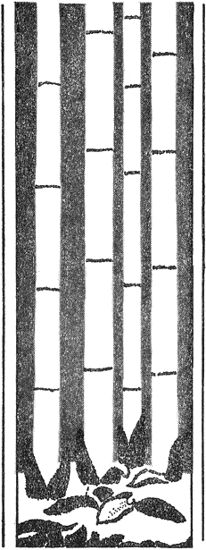
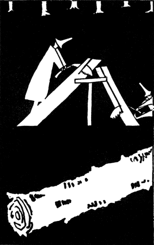
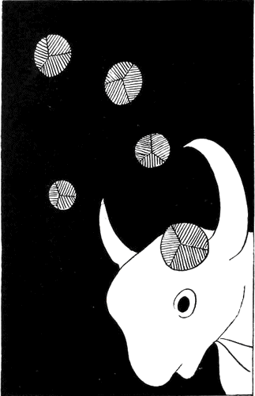

| 雀の卵 | |
| 北原 白秋 | |
| (2015) | |
雀の卵
北原白秋
大序
一
「雀の卵」が完成した。いよいよ完成した。と、思ふと思はず深い溜息がつかれた。ほつとしたのである。
今、四校目の訂正をして、やつと済ましたところである。窓から見てゐると裏の小竹林には鮮緑色の日光が光りそよいでゐる。丘の松には蟬が鳴いて、あたりの草むらにも草蟬が鳴きしきつてゐる。南のバルコンに出て見ると、海がいい藍色をしてゐる。寺内の栗やかやの木や孟宗の涼しい風の上を燕が飛び翔つてゐる。雀も庭の枇杷の木の上で何かしてゐる。瀬の音もするやうだが、向ふの松風の下から浮々した笛や太鼓の囃子がきこえる。今日は盂蘭盆の十四日である。
長い苦しみであつた。かう思ふとまた、目の中が火のやうに熱くなつた。
「雀の卵」此の一巻こそ私の命がけのものであつた。この仕事を仕上げるばかりに、私はあらゆる苦難と闘つて来た。貧窮の極、餓死を目前に控へて、幾度か堪へて、たうとう堪へとほしたのも、みんなこれらの歌の為めばかりであつた。だからたとへ拙くともこれらの一首一首にはみんな私の首が懸つてゐる。首の坐に直つて歌つたものばかりだ。
そしてたうとう今日が来た。
此のこれらの歌は大正三年からぽつぽつ作り出して、足かけ八年目の今月今日、大正十年七月十四日午後三時にたうとう最後の朱を入れて了つたのである。
私の前に今冷たい紅茶が運ばれて来た。私はぐつとそれを一息に飲み干して了つた。
蟬の声がする。涼しい海の風が吹きぬけてゆく。私は生きかへつた。
二
大正三年の七月に私は小笠原父島から東京へ帰つた。さうして「輪廻三鈔」の中にあるやうな生活に入つた。それから「雀の卵」の生活が続いて来た。「葛飾閑吟集」の生活は五年の五月から初まつてゐる。六月の末に真間から小岩村の三谷に移つて、其処で新らしい紫煙草舎の閑寂三昧に入つた。哥路
といふ小犬と、黒い子鴉と村の子供たちが私の朝夕の遊び相手であつた。私が外へ出る時には子鴉と小犬とがよく後を慕つて来た。子鴉は私が歩く時も私の頭や肩の上に留つて啼いてゐた。百姓どもは私を鴉の先生と呼んだ。内にゐる時には私が詩や歌を書いてゐる机の上に留まつてゐたり、悪戯したりした。私は時々歌の反古で、為ちらした鴉の白い糞を拭いて廻らねばならなかつた。秋の末に此の子鴉が本物の鴉になつて空へ飛んで行つて了ふと、冬が来て草舎は雀ばかりのお宿になつた。此の「雀の卵」の編纂にかかつたのは恰度その頃であつた。
尤も、その時はこんなに大冊の三部歌集にならうとは思ひもかけてゐなかつた。小笠原から帰つて以来の、東京麻布での所謂「雀の卵」の生活に属する者が主で、それには「輪廻三鈔」中の大部分も含まれてゐた。が、葛飾のものはその後だんだん慾が出て附け足す事になつたのである。で、六年の一月から六月までは、「雀の卵」の中の歌の推敲や新作と、一緒に葛飾の歌を作る事に夢中にされた。冬枯のさびしさに雀の羽音ばかり聴いて、食ふものも着るものも殆ど無い貧しい中に、私は坐り通しであつた。私の机の周囲は歌の反古で山をなした。何度も何度も浄書し清書し換へた。はては狭い部屋中に散らかつて、手もつけられなくなつて了つた。で、半ヶ年の間はその中で埋まつて、掃除一つ為ずに夜はその隅の方に片寄つて寝た。それを寒い雀が廂から逆さ頭をして覗いたり、小犬の哥路
が泥足のままで搔きちらしたりした。私は一心不乱であつた。
その初夏、私は深く決意するところがあつて、東京へ出た。さうして紫煙草舎を閉づると同時に、歌の上の門下にも解散を宣した。さうして愈々一人ぽつちになつた。「雀の卵」に命を懸ける覚悟で、層一層の貧苦を欣求した。八月に本郷動坂の長屋生活が初まつた。此処で何度も餓死しかけた。が、私は同じく山なす歌反古の中に埋つてゐた。
ここで紫煙草舎解散の辞を書いた。その中に左の一章がある。
「芸術家が自己の芸術の為に苦しむのは当然である。その苦しみが如何ほど深くとも、それはしかくあるべき事で、それは些
かも矜
りとす可きでは無い。それはよく知つてゐる。然しその為めに払はれた犠牲が予想以外に多大であり他に累を及ぼす事があまりに惨酷である時、私はつくづく自分が詩人として生れた事を呪ふ。又、詩人として生きねばならぬ事を呪ふ。
最近、それはこの八ヶ月の間、私がただ一冊の歌集「雀の卵」の為めにどれ丈精根を尽したか、それは私の妻がよく知つてゐる。それは詩人たる自分としても、殊に一家の窮境を救ふ為めにも、どうしても一日も早く完成させねばならなかつたのである。その為めに私は万事を放擲して、雀ばかり凝視めてゐた。阿蘭陀書房（弟の経営してゐるものである）の危機は日に日に迫つて来た。私は苦しんだ。然し私はその為めに自己の芸術上の良心を売る事はできなかつた。私は一切の妥協に耳を傾けなかつた。紫煙草舎の仕事も後廻しにした。私は親達にも弟達にも舎中の諸君にもそむいて、ただ推敲三昧に入つた。そのうちに時は過ぎ月日は徒らに私を取残して行つた。私と私の妻は食ふや食はずになつた。着のみ着の儘になつた。（ただ残つてゐるものは書籍の幾百冊と妻の琴と仕舞の扇とそれにあはれな書斎の器具だけになつた。）
私の歌は拙かつた。洗練に洗練を経るほど、磨けば磨くほど私は厳粛になつた。一字一句の瑕疵も見逃
せなかつた。或時は百首の内九十首を棄て、十首の内九首を棄てた。或時はたつた一句のために七日七夜も坐つた。ある歌のある一字は三年目の今日に到つて、やつと的確な発見ができた。それは初めから的確にその字で無ければならなかつたのだ。
天才無くして詩に執するは謬れり。全く其の言葉は真理である。私はこれが為に親には不幸の子となつた。弟妹には不信の兄になつた。而して舎中の諸君には不親切の限りを尽した。而して私の妻を饑ゑさせ、その衣をはいだ。
親達は怒つた。怒るより却て泣いた。弟達は恨んだ。恨むよりも訴へた。弟子達は責めた。責めるよりは迷はねばならなくなつた。ただその中に私の妻だけが、私を正当に理解してくれた。私は私の妻を信じ、私の妻は私を信じた。私達は貧しかつたが却つて仕合せであつた。二人はただ互に愛し合ひ、尊敬し合ひ、互に憐憫し合つた。
然し、私の仕事は容易に仕上げを急ぐ可き種のものでは無かつた。日を以て時を以て責められるにはあまりに勿体ない。芸術の路は一つである。
私は覚悟した。妻も覚悟した。饑死が目前に迫つて来る。それはいゝ、然し私達の背後をふりかへると、そこには肉身の両親がある、弟がある、妹がある。私は血を吐く思をした。妻は日に日に瘦せて行つた。
犠牲は大きかつた。幾度か危急に瀕して、盛り返して来た阿蘭陀書房も終に人手に奪はれた。私はみすみす弟を見殺しにし、親を再び暗闇に突き墜した。
詩を作るより田を作れと云ふ。全くである。私は遂に父親から、三十にして親を泣かす、俥挽き土を掘り石を担
げと罵られた。道理千万である。私は父の前に何を云はう。ただ頭を深く垂れるのみである。
All or Nothing. 彼のイブセン劇中のブランドの歩いた道は私の道であつた。
畢竟するに私は一徹者である。」
私はまたかうも続いて書いた。
「最近たつた一冊の歌集「雀の卵」に対する苦しみ、それも或は空な苦しみで無かつたか知れぬ。殆ど錬金道士のやうな苦しみが、幾日幾夜続いたか、而も私の得たものは何であるか。
それを思へば私はただ涙が流れる。ああ、あはれな私はただ歌の前にたゞ深く頭を垂れた私自身を見出したのである。
それは荘厳な光であつた。仰ぎ見るだに目が盲ひさうになる深いもの、高いもの、恐ろしいもの、やさしく、寂びしく、美しいもの、手を触れるだに勿体ない光であつた。
苦しめば苦しむほどその光は尊くなつた。進めば進むほどその光は遥かになつた。而して驚けば驚くほど複雑になり、突き詰めれば突き詰めるほど、手も触れ難いものになつて了つた。
正直に云ふ、私は今は詩も歌も全くわからなくなつて了つたのである。
正直に云ふ。私は号泣した。
恐らく、その時私の理智の瞳が正しく開いてゐなかつたならば、私はキツト自殺したであらう。
無惨、私の凡てが、根柢から覆滅した。」
これらの文章は可なり気を負つて書かれてある。今見ると非常に赤面するけれど、当時の心持としては全くこれに違ひなかつたのである。
葛飾から出京した時、私は弟の手に第一期の「雀の卵」の原稿を手渡した。早速それが組みに廻はされた。初校が出た。活字になつて見ると、また安心ができなくなつた。私はまた推敲し出した。やつと一と通り了ると、すぐに再校が出た。見ると愈々満足しなくなつた。で苦しみどほしでゐるうちに、阿蘭陀書房の危急が日一日と迫つた。たうとう私のその集は間に合はず了ひになつた。私のが遅延したといふ事が主としてその覆滅の原因でなく、四囲の情勢が必然的にさうなつて了つたのではあるが、兎に角私が知りつつ救ひ上げ得なかつた事は苦しかつた。私としてはどうしても芸術上の良心を売る事はできなかつたが、何よりも母親から泣かれる事が一番苦しかつた。早く済ましてくれと泣かれたところで芸術家として恥知らずの事はどうしてもできなかつたのである。
再校分の校正刷を擁へたまま、築地の仮寓から愈々動坂に移つたのは恰度盛夏の頃であつたが、それはその儘握りつぶしになつて了つて、また新らしく原稿紙を散らかし出した。山のやうにそれが身のまはりに積つた。さうして秋が来、冬が来た。
極貧が来た。考へて見ると、その頃の私としては相当に声名も地位もあつたし、さう物質的に苦しまなくともよささうなものであつたが、全くその日の糧にも差支ながらをかしい程金にならぬ事ばかりに没頭してゐたのである。それに書いたものさへ持つてゆけば何処の本屋でも喜んで金に換へてくれたにちがひなく、再三いろいろと申込んで来た向きもあつたが、一々頭から断つて、全然眼も向けなかつたのは、全く弟の復活する迄弟と同じく赤貧のどん底で終始しようと覚悟したからであつた。それに外の仕事に気を移せば折角のこれまでの真純な感興を破壊して了ふので、遮二無二死んでもこの一事にかぢりついてゐる外に途が無かつたのであつた。
何もかも売り尽して了つた。いくらか残つてゐる書籍類も大概手放して了つた。妻の琴もまげた。残るは彼女が仕舞の舞扇だけになつた。それももう破れて了つてゐた。
その頃よく遊びに来る人に歌人の森園天涙君があつた。遊びに来ては焼薯でも買ひませうと買ひに出かけてくれた。その森園君が見兼ねて四海多実三君に通じて七十円なにがしの補助金を取り次いでくれた。そのお蔭でどうにかその年は越せて、貧しい乍らの春は来たが、妻がたうとう病気になつて了つた。それで一緒にこの小田原へ転地する事になつた。かう書いてゐながら、その当時を思ふと、私は森園、四海両君にどんなに感謝していいかわからない。
私の歌はその頃から漸く曙光を見出しかけて来た。すつかり趣が変つて今までの強ひて澄み入らうとした厳
つい不自然さが無くなつて来たやうに思へた。然しそれもほんの曙光を見出しかけたばかりで、私は突然無言になつて了つた。
一つには貧しい生活が貧しい乍らに愈々複雑になつて、愈々一人ばかり歌つたり歌ばかりに苦しんでゐられなくなつたのであつた。二つには歌と云ふものに命をうち込んで行つてゐるうちに、真の沈黙の尊さと云ふのが自然と了解されて来て、今は三十一字の短歌でも冗漫に過ぎ言句が多過ぎるやうに思へて来たのである。それでもつと短い、極々煎じつめただけのものに畢竟は徹底して行くのが自分の芸術に取つて最も落つきある正しい道ではあるまいかと思へてならなかつた。三つには歌の旧門下と私との間に起つた不祥事が私を愈々沈鬱にさせて了つたのであつた。で、もう二進も三進も動けなくなつて了つた。
その儘四年間、私は歌一つ作らなかつた。
その間に、私は同じ生活を別な方面から筆をつけ始めた。散文詩の「雀の生活」がさうであつた。尤もそれは雀が主になつてゐる。が、それらの韻文と散文と、その行き方は違つても畢竟は同じ観照から来てゐる。で、これは是非にも本集と参照して読んでほしいのである。
昨年、私は葛飾以来の妻と別れた。その一年間、私は愈々何一つ仕事をしなかつた。閑寂ないい生活が全然破壊された為め、静かに独でそれを取りかへす事が何より大切に思へた。さうして冬の暮から次第に私の心は閑雅な寂光の中におとなしく浸つてゆけるまでになつた。さうなつて再び、永い間凝り固つてゐた歌の感興がこんこんと溶けて溢れ出して来た。「雀の卵」の歌反古がいよいよ押入の中から引つ張り出された。それは破れ行李にいつぱいつまつて、まだ外にはみ出してゐた。で、一先整理をするにしても何処から手をつけていいかわからなかつた。私はただ、それに武者ぶりついて了つた。新らしい切々たる哀情が私の胸をうつた。
それからまた永い事かゝつて、それらの全部の歌を善いのも悪いのもその儘に一応分類して見た。それからまたまた一首一首に見直して行く事にした。そこでまた改めて点検する段になると愈々暗い失望が私を囚へた。殆んどその五六を除く外、これと云つて満足な歌は無かつた。葛飾以来の苦行も遂にはまだ半途にも出てゐない事を知つた。それで全然また遣り直す事になつた。第一期の校正刷の「雀の卵」に至つては殆んど見る影もないあはれなものに目に映つた。ああ、あの時に急いで公刊しなくてよかつたと、つくづく吐息がつかれた。本当に今まで永い間蔵
つて置いてよかつた。飛んでもない恥さらしをする事であつた。あの蕪雑な「雲母集」でつくづく私は懲り果ててゐたのであつた。
黙つてゐれば今度もまた五六年かかつても完成しないだらう。さういふ弟の配慮で、アルスから鎌田敬止君が来てくれた。それで、反古の整理や分類や清書を改めて手伝つて貰ひ乍ら、また私は推敲三昧に入つて了つた。朝から夜、夜明かけて坐つてゐて、それでたつた一文字を修正する為めだと云ふ事は、傍にゐる同君には嘸切なかつたらうと思つた。さうしてぶつ続けの徹夜を八日あまりして、どうにか一先原稿ができた。
で、アルスに一旦手渡したのが第二の「雀の卵」であつた。この時まではまだ「葛飾閑吟集」が百首に満たなかつた。
今年の一月になつて、また遣り直す事になつて原稿を取り戻して、ちよいちよい手を入れたり作り直したりしてゐたが、色々月極めの雑多な仕事に追はれて充分の時間が無くて三月になつた。三月の中旬から愈々また鎌田君を相手に坐り直した。さうして十日間ぶつ続けの徹夜苦行をやつた。四月にまた二度、前後合せて十三日間、五月には十四日間の通しで、やつと最後の「雀の卵」が完成された。この時は二人とも気絶しさうになつた。鎌田君には毎朝午まで寝て貰つたけれど、私は殆ど三日位一気に徹夜して間に一二時間そのまゝで寝てまた起きて、またぶつ通した。鎌田君は病気になつた。全く今度「雀の卵」が完成したのは鎌田君が傍で気勢を添へてくれたお蔭である。全部の浄書もすつかり同君の手を煩はした。非常に有難く思ふ。今年になつてから何でも原稿紙を二千枚使つたと云ふからそも〳〵の初めからは一万枚以上は確かに使つた事だらうと思ふ。
それから初校再校参校四校と、やつぱり四五日づゝの徹夜してまだ充分と行かないで、まだ訂正の葉書を今以て飛ばしてゐるのである。
「葛飾閑吟集」には新作の短歌が百首以上同じく長歌が八章ある。これは主として五月の苦行で自然とすばらしい勢で湧き出したものである。この四年間歌一つ作らなかつたけれど、以前から見るといつのまにか段違ひの高さにのぼつてゐる自分を見た時に、やつぱり黙つて独で堪へてゐたお蔭が今やつと目に見えて来たのだと有り難かつた。
兎に角、そこで私はほつとして、一時に心が軽くなつた。
三
何故こんなに表現に苦しまねばならぬか。ある人は一旦作つたものを後で修正するのは不自然だと云ふ。然し、初めの表現に不自然な個処があり、的確で無い文字が一つでも挿まつてゐる、それが目につくから、それを真に自然に、真の表現にまで還すが為めに苦しむのである。
それは真の天才であつたら、私ほどの苦しみもあるまい。初めからすらすらと的確に思ふ儘の表現ができるだらうけれど、私ごときには、それにまだ歌には極々の不丹練者であるから、人の十倍二十倍の苦しみを経なければとてもとてもと云ふ観念の臍を固めてゐた。無技巧の技巧などと澄まし反つてゐられないのであつた。まだそれを云ふ丈充分に手に入つてゐないのであつた。
私は曾て小説「よぼよぼ巡礼」の中で、かう云ふ事を主人公の素春に云はせてゐる。素春は私だと考へて下すつていい。それにこの中に出てくる詩
といふ字を歌
として読んで下さるといい。
「あゝ、私は決して天才では無からう。さういふ自分を天才視するほどの驕慢も自尊も今の私にはさらさら無くなつて了うた。全く身の程を思ふと恐ろしくなる。が、何と云つても私は詩を離れて生きてゆけない人間だ。端くれでも矢つ張り私は芸術家の一人だ。芸術家の芸術に奉仕する苦しみと云ふものはまた格別なものだと云ふ位は知つてゐる。あの葛飾にゐた頃にしろ、私は字を削り句を削り、一念に彫心鏤骨の極を尽した、が、了ひには、思ひつめた「白金の啞」のやうになつて、ただ燦々とした涙ばかりが頰を伝うた。何にも云へなくなつて、ただうむ
とかおむ
とか云へばそれでよかりさうにも私は思へた。然しそれきりになつては詩が無くなる。そこから切端つまつて溢れ出したので詩になる。詩は詩の形で表現されなければ詩とは云へない。だから、歌はない詩人なぞと云ふ語は意味を成さない。結局は詩の表現が必要だ。その表現にしてからが、無論最上最的確のもので無ければならないのだ。表現なぞはどうでもいいと云ふ人があるが、それはあまりに詩の徳詩の妙といふものを知らない人の言葉である。一枚の木の葉を画くにその一生を以てした貧しい画家もあつた。ただ一点をうつ為めに十年の酸苦を嘗めた大愚な画家もあつた。そこまで行かなければ真の芸術とは云へない。真の天才真の名人とは云へないではなからうか。詩の徳といふものはそれほどに霊験
なものだ。それを僅かでも私が知つてゐるからこそ苦しむのだ。愛の芸術と云ふものは決して愛そのものの概念を蕪雑に演述したものでは無くて、愛そのものを芸術として真に体現したものに外ならぬ。空力
みでは何にもならないのだ。
つくづく慕はしいのは芭蕉である。光悦である。大雅堂である。利休、遠州である。また武芸神宮本玄心である。私はどうかしてあそこまで行きたい。風流が風流に了らず、真に自然に還つて、一木一草の有るが儘におのれをその中に置く、さうした自然に任せた、あなたまかせの境地こそ真の芸術では無からうか。私はその心を以て心としつゝある。さうなりつつある。
私の此の超脱的閑居の精神もそこにある。人から見れば極めて弱気な消極的なものに見えやう。然し私に取つてはこれ以上の積極的生活は無い、見てゐてくれ、どちらが真に光つて来るか。」
実際私はかう思つてゐた。今も思つてゐる。
第一に内容と形式とをよく二つに引き分けて考へる人がある。これはあまり浅薄である。二に技巧と云ふ事を化粧、若くは虚飾の謂に思意してゐる人がある。これも真の技巧と云ふものを知らない人の謬見である。真にいい歌はおのづから内容と形式とがただ一つに渾然として融合してゐなければならぬ筈であるし、真の技巧は内容そのものをその儘に形に表現した、真に自然な、雑り気のない、極めて本質的な、満ちて、さうして思ひきつて素直に単純化された、その尊い境地にまで押し進んだものでなければならないわけである。ある種の歌が怪しく空虚に見えたり虚飾に見えたりするのは、主として観照の態度、物に対つての精神の据ゑ方、感じ方が先づあやふやな上に、不純な小主観を交へ過ぎたり、不謙譲だつたり、身構へしたり、才情の放恣、無節度と云ふ点から来る。これが最大原因で、さういふのは、畢竟、抑から所謂レンズの度がピタと合つてゐないのである。だから、それ等には引き続いて表現上のまやかしが必然にやつて来る。真によく観、鋭く感じて、その儘正直に表現すればこれより越した事はない。たとへばそれが拙たない子供の描く画のやうなものでも虚偽では無いだけに空つぽなものにはならない。それは手馴れ過ぎ、巧み過ぎた虚偽の技法よりどれだけいいか知れない。これに反して観照の態度が初めから不正直だつたら何にもならないのである。で、ただ、自然の真実相に徹し得る丈の芸術上の精神修業を度外して、歌としての外形的技法のみの修練を先きにすると云ふ事は恐ろしい誤謬であると云はねばならない。初めが大事でそれから先きは苦行次第である。だから無論先きには先きがあつて、表現の上でも真の妙境に澄みきる迄には中々測り知られぬ幾層の段階を真実に我から苦労して上つてゆく丈の充分の覚悟があつて、初めて成し遂げ得る事と思はれる。これはさうした苦行の末には自然と自身に体得できる筈であるから早急に焦
り散らす必要は無い。寂びとか渋味とか、さうした究極に落ちつくのは何れにしても相当の年代が経つてからで、じつくりと苦労為抜いてゐるうちには自然そのあたりに到達するものだ。
そこで正直に観照し正直に写生せよといふ事は無論正しい。正しいが、それは歌作上の根本義であると云ふだけで、それだけではまだ初歩だと考へる。そこから当然出発すべきではあるが、実相の観想そのものが正直でも鈍く、形は写しても神に徹せず、無為で平凡で無選択である場合、殊に真の音楽を知らず、真の愛なき霊ひを通じてのさうした作品は、詩と云ふ第一の見地から見て決して優秀なものとして遇する訳にはゆかない筈である。世常にはこの種の写生歌が多いやうに見受ける。だからすぐれた特殊性の光輝は見るに難い。さうした個性は本質的に詩人としての卓越点をたいして有しないものと見做すのが相当であらう。
写真と絵画とは違ふ。その写真にしてからが撮影者の個々によつて、その選択が違ふ。矢張り優れた個性が初めて優れた構図を取るのである。これを思はなければならない。
だから写生の唱道は啓蒙運動として見る時に価値があるが、真の芸術の絶対境はその写生から出てもつと高い、もつと深い、もつと幽かな、真の象徴に入つて初めてその神機が生き気品が動く。さうして彼と我、客と主の両体が、真の円融、真の一如の状態に合して初めて言語を絶した天来の霊妙音を鳴り澄ますのである。
写生よりさへ出でず、ただ放恣な根拠の無い空想と、機智若くば才気より発した比喩隠喩交りの概念的象徴、或は跨張された生の儘の情熱を幼稚な矜驕と粗雑な激越調とを以て遣る種の歌はもとより論外である。
私は少くとも実相を離れて真の美真の寂
無しとする者の一人である。真実相の寂光を真に識る事こそ所謂世に云ひ古るした物のあはれを識ると云ふ事であらう。真の愛、真の雋鋭なる官感を通じて世の真実相に徹する時、真の生命は初めてその神秘の光を放ち、歌も愈々真の象徴に達する。さうして彼の縹渺たる神韻なるものはさうした妙境の奥にあつて、揺曳する。
東洋芸術の神髄はかうした自然の真実相に端的に直入する。細微の写生を避けて直接にその本質そのものを把握する。即ち一視に機を識り、一線に神を伝へ、一語に生を活かす底のものである。短歌俳句の類は、その自然観照に於て、此の如き象徴的筆法を必要とする。ここまで行かなければならない。
で、これを表現するに当つての私としての信条は、何は措いても歌は言葉を以て表現せねばならぬ芸術である故、第一に大切なのは言葉の吟味と云ふ事であると思つてゐる。言霊の幸ふ国に於ては猶更の事である。言葉は生物である。この生物それ自身の声色香味触を深く、識別し、これらを色々につなぎ合せて、真の微妙な一連の交響体と成さねばならぬ。さうなつた時三十一字の短歌は一尾の響尾蛇のごとくその肉身の底の底から揺れ響くであらう。私は永い間これが為めに苦しんで来た。で、言葉に対する感覚は極めてデリケエトなものになつてゐる。一音でもツボから外れたが最後すぐに顔色が蒼くなる。だから言葉をたゞ意味さへ通じればいゝ位に粗雑に取り扱つてゐる作品に接すると、たちまち耳を覆うて走つて了ふ。世の中の歌人達の間にはこの言葉をさながら苧殻のやうに軽く振り廻したり、石ころのやうにかち合せたり、殺したり弄び為過ぎる。日本に生れて日本の言葉の本質さへ知らない人が多いのは驚くべきである。
それから、此のやうな一連の調子を整へると云ふ事は何より大切ではあるけれども、単にただその調子に流れ過ぎて表現せんとするものの本体のリズムを等閑に附する事は由々しき一大事であつて、さうなつたら全く生命のない表現に堕して了ふ。で、雀ならば雀の羽ばたきのリズムがその儘に言葉となり、躍動する雀の諸種相が、その儘の形に言葉を以て表現されなければならないのである。そこまで行かなければ真の象徴詩とは云へない。ただ雀が羽ばたく、雀が動くだけでは意味だけのものである。だから吹かれ吹かれて雀が一羽
と一羽雀が吹かれつつをり
とは格段の相違となる。前者には幾度も
と云ふ語は無くとも幾度も吹かれては羽ばたき吹かれては羽ばたく状態がそのままに出てゐる。後者にはそれが無い。意味だけである。かうなると雀は不用意な言葉によつて全然殺されて了つてゐる。
かういふ例証は挙げれば限りが無い。で、私のさうした歌について見てほしいと思ふ。
それから、何と云つても一点一語である。如何なる場合にもその一点に於て動きの取れないといふ言葉はただ一つしか無い。それがなかなか手に入り難いので苦しむのである。
それからまた、言葉と云ふものは弾みさへつけてやると、際限が無く跳ね上るものである。これを深く圧へつけなければならない。自然を言葉の上だけで強調してはならない。言葉は自分の出で入る呼吸そのもののやうにおのづから流露して来なければならない。
兎に角、私が人以上に此の事に苦しまなければならなかつたのは、何と云つても人以上に未熟だつたに違ひない。それに何と云つても根本の観照の態度そのものに隙が有つた、隙と云ふよりも寧ろ小我をあまりに早急に出し過ぎた為めに、従つて中途半端な表現に留つて了つたのが多かつた。で、表現よりも観照そのもの、それより心の据ゑ方が第一だと云ふ事がつくづく思はせられた。
恥を云ふと、私は「雲母集」で失敗した。「桐の花」で完成したものを思ひきつて破壊してかからうとした。あれは蛇皮を脱ぐの類で、一旦はあれ丈の自己革命をやつて見ないと収まらなかつたのである。で、活気活力のみで何も彼も無理押しに押し通さうとした。で、我見がのさばり、自然相が極端まで強調され、言葉が事実以上に飛躍し過ぎてゐた。これに詩として表現すべきを強ひて歌にした為め一首一首に独立性を欠いだ連作のものが出来上つた。後になつて稍しみじみとした処に落ちつかうとしたが、兎に角、あれは三崎の歌とは云へ、小笠原島の光耀燦爛たる麗空麗光麗色に眩暈して了つてからの作が多かつたので、何も彼も麗かづくめで躍り跳ね過ぎてゐたのであつた。今から見るとたとへ甘くとも「桐の花」の方がずつとすぐれてゐた。
その後の作にも随分「雲母集」の余焰の抜けきらないのが多かつた。それに、どうにかして真の短歌の行くべき道を発見しようと焦つた為め、ああでも無いかうでも無いと事毎に迷ひどほしであつた。そこへゆくと素人のかなしさであつた。強ひて澄み入らうとした傾きもあつた。ただ畏れ入つて了つて固くなり、肩ばかり張つて息もつけない苦しさに自縄自縛して了つた。かうなつたら手も足も出せる筈はないのである。で、実際に観てゐ乍ら、ついその傍まで行つてゐながら、その真生命にピタと手を触れる事ができないで、ふつと片傍に逸れてゆく、どうしても主体と客体との間に一分の隙があつた。此の隙を乗り超えるまでの、つまりこの数年間の必死の苦しみであつたのである。
今、斎藤茂吉君の「あらたま」のそれに倣つて、私も二三の例証を挙げて見よう。ここにそれぞれ当初の原作と最後の改作とを並べる。尤もこの間に数十階の階段を経て来たものと見てほしい。さうして成程と合点して貰へば有り難い。
┌月の夜の白き狼煙
もくもくと見れども尽きず朗らかながら （原作）
（１）┤
└月の夜の白き霧雲
もくもくと流れて尽きず夜灯
の上 （改作）
┌玉蜀黍
かがよふ中にうつら来てしばらく光り誰か消えつも （原作）
（２）┤
└玉蜀黍かがよふ中にうつら来てしばらくはゐしか誰か去りたり （改作）
┌ひと色に黒くにじめる冬の山雨過ぎぬらし竹のみな靡く （原作）
（３）┤
└ひと色に寒くにじめる冬の山雨過ぎぬらし竹のみな靡く （改作）
┌冬の日の光つめたき笹の葉に雨蕭々とふりいでにけり （原作）
（４）┤
└短か日の光つめたき笹の葉に雨さゐさゐとふりいでにけり （改作）
┌ふる雪の小夜の真澄となりにけりふと湧き起る牛の底吼 （原作）
（５）┤
└吹雪やみて月夜あかりとなりにけりふと湧き起る牛の太吼 （改作）
┌ぬかるみの中に求食
れど白鶴はさびしいかなや音をのみぞ啼く （原作）
（６）┤
└春泥の上に求食
れど腰ほそく清らなるかな鶴の姿は （改作）
┌白妙の丹頂の鶴やるせなく地の淡雪に嘴
つけにけり （原作）
（７）┤
└鶴と云へどひもじきものか松ヶ根の凍
れる苔に嘴
つけにけり （改作）
┌一つ火のさ緑の蛍大きく光り雨しとどふりし闇を今上る （原作）
（８）┤
└一つ火のさ緑の蛍息づき明り雨しとどふりし闇を今上る （改作）
┌安心して子供が遊んでゐる玉蜀黍はそばに真紅な毛を垂れてゐる （原作）
（９）┤
└そよかぜに子供が遊んでゐる玉蜀黍はそばに真紅な毛を揺りてゐる （改作）
┌百日紅の花も咲きたり時折は遊びに来ませせはしかりとも （原作）
（10
）┤
└百日紅の花も咲きたり時折は遊びに来ませやや遠くとも （改作）
┌日向吹く風のほとりの稗草はこまごまと寂し光りそよぎつつ （原作）
（11
）┤
└日向吹く風のほとりの稗草はこまごまと弱し光りそよぎつつ （改作）
┌ひとつひとつ目につく秋の草の穂の夕そよめきもあはれなるもの （原作）
（12
）┤
└ひとつひとつ目につく庭の草の穂の絮毛
は白しそよがぬぞなき （改作）
┌かつしかの友なし雀心して飛べや風吹き日は暮れかかる （原作）
（13
）┤
└日の暮の友なし雀心して飛べや田づらの風吹きかはる （改作）
┌松が根にひとむら光る薄の穂あはれとし見つつ我もいそぎぬ （原作）
（14
）┤
└松が根に夕さり光る薄の穂ほとほとに寂しうちそよぎつつ （改作）
┌雀が二羽縒
れて羽ばたく美しさ落ちむとしてはまた飛びあがる （原作）
（15
）┤
└雀が二羽ころげ羽ばたくうつつなさ落ちむとしてはまた飛びあがる （改作）
┌枯れ枯れの唐黍の秀
に雀ゐてそこに風吹く声こそすなれ （原作）
（16
）┤
└枯れ枯れの唐黍の秀に雀ゐてひようひようと遠し日の暮の風 （改作）
┌刈小田に落穂搔きゐる雀の中
うしろ向けるはいとど寂びしき （原作）
（17
）┤
└刈小田に落穂搔き搔く雀いくつうしろ向けるは尻尾上げて忙
し （改作）
┌鼻づら反らし角低め来る真黒牛の片眼輝けり穂薄の下 （原作）
（18
）┤
└曳かれ出でてうしろ振り向く真黒牛の片眼輝きぬ穂薄の風 （改作）
┌薄の穂のさむざむと立つ沢の曲
白鷺はゐれど声ひとつせぬ （原作）
（19
）┤
└薄の穂のさむざむ明る沢の曲鷺多くゐれど声ひとつせぬ （改作）
┌ふと見つけて涙こぼるる月読の光に白い蛾が飛んでゐる （原作）
（20
）┤
└ふと見つけて寂しかりけり月の夜の光に白き蝶の舞うてゐる （改作）
┌竹あちこちちよろ〳〵川の川下に水車廻れり黄なる陽の射し （原作）
（21
）┤
└竹あちこちちよろ〳〵川に日の射して水車かかれり寒き鶏
の声 （改作）
┌竹あちこちちよろ〳〵川に日の射して尾花光れり石ころの上 （原作）
（22
）┤
└竹あちこちちよろ〳〵川に日の射して尾花輝けり寒き石の上 （改作）
一々枚挙にいとまないほどである。それから全然駄目なものは思ひきつて根本から改作して了つた。
┌雨霽れて早稲の青田の中空に虹あざやかに立ちにけるかも （原作）
（23
）┤
└雨霽れて早稲の青田の夕空に虹の輪明
う立ちにけるかも （改作）
右抹殺。代ふるに左の連作を以てした。
┌思はぬに虹立つ空の夕明り笠ふりむけて誰ぞや仰ぐは （新作）
│虹の輪の七色ふかき片裾に雨しとどなり早苗田の上 （同上）
（24
）┤
│虹の輪にひとしほ冴ゆる早稲田の水田の遠
の燈火
の列 （同上）
└雨ふくむ野良の新樹の空ちかく消ぬかの虹のまだ斜なる （同上）
なほ、
┌陽に向きて宙に羽たたく稲穂雀飛びは上らね輝りしきり落つ （抹殺）
（25
）┤
└脚ちぢめて雀飛び上る稲穂の揺れ揺れかがやかし金色の風 （抹殺）
右の二首を改作してゐるうちに左の二首が出来たので、以上のは抹殺した。
┌風に見えてしきり羽ばたく稲穂雀遠き穂づらに散りまぎれつつ （新作）
（26
）┤
└ちりぢりに雀まぎるる垂穂波風は入日の田に吹きかはる （新作）
小笠原の正覚坊の歌十四首などは殆ど棄てて了つた。中に一首どうにか物になりさうなのがあつた。それを拾つて、またすつかり改めて了つた。
┌輝
る日麗ら万劫経たる海亀のこの諦
めの大きなるかも （原作）
（27
）┤
└日に照られ波にさらされ海亀の甲羅の苔も青寂びにけり （改作）
凡てがかういふ風であつた。
自分で見ても改作毎に素直にありの儘に、その本質に近づいて行つたのがわかつた。愈々これで動かぬといふ最極まで行くと、全くふたつとなき完成のよろこびが来た。涙が流れて来た。
それにこの集の「葛飾閑吟集」の新作のあるものは、たとへば蛍四章の「昼」、「揚羽蝶」左の「庭前秋景」の二首などは愈々象徴に入り得たものと信じてゐる。
┌ふと時をり木賊
の蔭を真白き猫耳立ててをどり何の気はひなき
（28
）┤
└うつつなく木賊にうつる秋日の蝶驚きて立てど何の気はひなき
それにうれしいのは、渋く寂びしくなりまさる私の観想の中に、再び忘れられてゐたあの「桐の花」の明るさが目に立つて還つて来たやうなけはひがする。それも明るい乍ら以前の明るさとは違つた渋さを見せて、再び私を訪づれて来た。
考へると、退いてゆくやうでやつぱり一段上の螺旋を廻つてゐるのでは無いか。
私の生活も、幸に今度の妻が来てくれて以来、和らかな静かな明るさに満たされてゐる。
何れにしても、少くとも此の八ヶ年の苦しみは私にとつては決して徒爾では無かつたと信ずる。殊に葛飾以来、私の詩境は自分ながらその以前とは比較にもならないほど立ち勝つて来たやうに思へる。兎に角苦しみ苦しみやつと此処までは登つて来たが、これから先きが嶮路である。
＊
この序文を書きかけてから三日経つた。今日は風が涼し過ぎる位である。浪の音も騒立つてゐる。後丘の栗や臭木が白い葉裏を見せて揺れてゐる。松の根には日あしがかげつて、蟬時雨がしつきりなしにふりそそぐ。
私は今白い摶飯
を三つ食べて、冷めたい紅茶を一杯ぐつとあほつたところだ。
たうとう「雀の卵」が完成した。上天に向つて私は感謝する。生きてゐてよかつた。生きてゐてよかつた。
大正十年七月十八日
小田原天神山にて
白秋識

葛飾閑吟集
序に代へて
大正五年五月中浣、妻とともに葛飾は真間の手児奈廟堂の片ほとり、亀井坊といふに、仮の宿
を求む。人生の命運定めがたく、因縁の数寄予めまた測
りがたし。森羅万象日日
に新
にして、いつしか春過ぎ夏来ると雖も、流離の涙しかすがに乾く暇なく、飛ぶ鳥の心いや更に泊
る空なし。われ一人の女性を救ひ、茲に妻となして、永恒の赤縄
を結ぶと雖も、いささかも亦浮きたる矜
を思はず。人間の悲願いよいよ高けれども、又あながち世の鄙俗
きを棄てず。赤貧常に洗ふが如く、父母にわかれ、弟妹にわかれ、いまだ三界を流浪すると雖も、不断の寛濶また更に美
しからむ事をのみ希ふ。されば玲瓏として玉の如く、朝
に起き、夕
に寝ねて、いただくはありふれし米の飯、添ふるに一汁一菜の風韻、さながら古人の趣に相かなふを悦ぶ。まことや簡素は自然の徳、われ敢て強ひて衒はずとも、おのづから身に驕る宝なければ、常住水に魚鱗の苔を洗ひ、野に出で丘にのぼりて、時に鮮菜の土をはたく。閑雅、閑雅、われ汝
を慕ふ事久し。願くば田園疎林の中、行住念々汝とともに処して、閑寂さらに寂しからむ。
うきわれを寂しがらせよ閑古鳥 芭蕉
（真間の閑居の記）
葛飾前歌
薄野
薄野
に白くかぼそく立つ煙あはれなれども消すよしもなし
黍
朝ぼらけ一天
晴れて黍の葉に雀羽たたくそのこゑきこゆ
蓮花
絡駅
と人馬
つづける祭り日の在所
の見えて白蓮の花
白馬
ほのぼのと白馬
曳かれて濁り川濁れる水に口つけに来ぬ
雀子嘻遊
飛びあがり宙にためらふ雀の子羽たたきて見居りその揺るる枝を
飛びあがり宙に羽たたく雀の子声立てて還
るその揺るる枝に
真間に移る
一
葛飾
の真間
の継橋
夏近し二人わたれりその継橋を
葛飾の真間の手児奈
が跡どころその水の辺
のうきぐさの花
二
住みつかぬ山の庵
はけうとけどまだそぞろなり一日
二日
は
堪へがてぬ寂
しさならず二人来て住めばすがしき夏立ちにけり
この夏や真間の継橋朝なさなゆきかへりきく青蛙
のこゑ
蕗の葉に亀井の水のあふるれば蛙
啼くなりかつしかの真間
野ゆき山ゆき
一
おのづから心安まるすべもがと寂しき妻と野に出でて見ぬ
鳰鳥
の葛飾小野の夕霞桃いろふかし春もいぬらむ
二
この妻は寂しけれども浅茅
生
の露けき朝は裾かかげけり
草の葉に生
れしばかりの露の泡蛍はいまだ光りえなくに
三
山ゆくと妻をいたはりささがにのいぶせき糸も我は払ひつ
たまさかに来
り眺めし山の池早や美くしう水草
生ひにけり
かろがろと雀飛びつき小枝
の揺
り揺りもやまねば下
覗
き居
る
香
ばしく寂
しき夏やせかせかと早や山里は麦扱
きの音
紫蘭咲く
紫蘭
咲いていささか紅
き石の隈
目に見えて涼し夏さりにけり
うしろ向き雀紫蘭
の蔭に居りややに射
し入る朝日の光
月夜
月の夜のましろき躑躅
くぐりくぐり雉子
ひそみたりしだり尾を曳き
燕
燕とまるただち揺
らめく楊
の枝時の間
水につきつつ反
る
翔
り翔る夕焼つばめ幾羽
つばめ羽振
疾
けば裂尾
のみ見ゆ
一羽とまりまた一羽とまる頰紅
つばめ楊
はいよよ揺れにけるかな
つぎつぎに留
れば深し小枝
の揺れひた縋
りつつ燕が四五羽
抗
み騒
ぎ枝にひた縋
る燕の揺れ一羽は宙にまだ羽うちつつ
雨のころ
物の芽
何の芽か物の芽かをす雨ゆゑに今朝
ふる雨をめづらしみゐる
雨滴
枇杷の葉の葉縁
にむすぶ雨の玉の一つ一つ揺れて一つ一つ光る
枇杷の葉の葉縁
にゆるる雨の玉のあな落ちんとす光りて落ちたり
蟹と竹
かさこそと蟹匍ひのぼる竹の縁
すがすがと見つつ昼寝
さめゐる
雨しづく見のすずしさや庭の小竹
の揺るるさきより蟹ころび落つ
蝸牛
蝸牛
の角の秀
さきの白玉は消
なば消
ぬべし振りのこまかさ
上
つ葉にふと角ふれて蝸牛
驚きにけむ身ぬちすくめつ
驚きてつと角退 きし蝸牛 またつくづくと葉に触 るあはれ
蛍
葉蘭の闇に蛍か居らし息づきつつとある葉裏の青う明
るは
晴日小閑
朝
矢のごとく時たま翔
る小鳥のかげ山蔭に見えて晴天の風
一天晴れて今朝
し吹きまくつむじ風に吹きちぎられて飛ぶ木の葉青し
昼
朝鮮風俗の絵葉書を見て
白妙
のころもゆたけく笙の笛吹きて遊べり韓
の人かも
白妙のころもゆたけき韓人 がのうのうと挽く長柄 大鋸

夕
この山はたださうさうと音すなり松に松の風椎に椎の風
松風の下
吹く椎のこもり風なほし幽
かなり雨もかもかかる
雑木
の風ややにしづもれば松風のこゑいやさらに澄みぬ真間の弘法寺
鳥の啼くこゑ
かおかおと啼くは鴉。ぴよぴよと啼くは雛鶏
。雀子はちゆちゆとさへづり、子を思ふ焼野の雉子
けんけんと夜も高音うつ。現身
の鳥の啼く音
のなぞもかく物あはれなる。天
わたる秋の雁金春くれば遠き雲井にかりかりと消えて跡なし。
棗の花
棗
の花の咲くところ、光は強く、陽
は青し。棗の下
に啼く蛙
、蛙と呼ばひ恍
れ遊ぶ。棗よそよげ、青空に。
おなじく
花なつめ軍帽紅
き騎馬の兵のつぎつぎにかがみ今朝通るなり
我が庵
の厠
の裏のなつめの木花のさかりも今は過ぎたり
三谷に移る
前庭
いつしかに夏のあはれとなりにけり乾草小屋の桃色の月
紫煙草舎
噴井
べのあやめのそばの竹棚に洗面器しろし妻か伏せたる
噴井
べのあやめの下
のこぼれ水雀飲み居
りあふるる水を
向う土堤
夏浅み朝草刈りの童
らが素足にからむ犬胡麻の花
飯を食みつつ
現身
と生れたまひて吾がごとか飯
食
さしけむ越
の聖
も
庭さきに雀の頭
がうごいてゐるそれを見ながら飯
食
べてゐる
葛飾のふくら雀の声きけばつくづく恋し父母の家
農家小景
浅夜
夏浅き月夜の野良の家いくつ洋燈
つけたり馬鈴薯
の花
馬屋の前
みそ萩の花咲く庭の夕月夜尻向けて馬屋
に馬這入りをる
月の夜の堆肥
の前の百合の花誰
ぞや野風呂の湯気にかがむは
背戸
カンナの花黄なる洋燈
の如くなり子供出
て来
よ背戸の月夜に
月夜よし厩のうらの枇杷の木に啼く鶉
ゐて露しとどなる
藪蔭
夕野良
の小藪が下
の合歓
の花もも色薄う揺れて霧の雨
夕野良
の小藪が下
の合歓
の花きり雨
かかかる雛燕
のこゑ
蛍四章
朝
河土手に蛍の臭
ひすずろなれど朝間
はさびし月見草
の花
夜
月の夜の堆肥
の靄に飛ぶ蛍ほつほつと見えて近き瀬の音
蛍飛ぶ浅瀬の蛇籠濡れ濡れて薄けぶり立てり月夜明りに
昼
孟宗竹
に孟宗軽くかぶさる里こんもりと見えて前の蓮の田
幽
かなる翅
立てて飛ぶ昼の蛍こんもりと笹は上をしだれたり
昼ながら幽かに光る蛍一つ孟宗の藪を出でて消えたり
雨
一
つ火
のさ緑
の蛍息づき明
り雨しとどふりし闇を今あがる
涼味
樗咲く
羽根そよがせ雀樗
の枝に居り涼しくやあらむその花かげは
時化前
短夜
の槐
の虹に鳴く蟬の湿
りいち早し今日も時化
ならむ
風空
に朝の虹立つ時化
もよひ燕群れて迅
し田の上
翔
りつつ
雨間
菅畳
今朝
さやさやし風に吹かれ跳
び跳
び軽ろき青蛙
一つ
嘴太
の雨間
の鴉しみじみあそび蛙
引き裂けば青き液
流る
日ざかり
松山
松山に松蟬鳴きて久しければ立ちとまる母か子の手を曳きて
膠煮てゐて
遠天
に雷雲
の底びかり蝶一つ舞へりこなたの田には
蛙
一つ鳴き出でてふつと浸
り黙
るこのひとときの池の面
の照り
太鼓一つとんとろと鳴れり炎天の遠
ひた寂しかも青田見てゐて
膠
煮て銀泥
溶
かす日の真昼何かしかひそむ暗
きけはひはも
破垣
に日の照りまぶし思はぬにほつつりと一つ雨の粒落ちぬ
蜻蛉
日の盛り細くするどき萱の秀
に蜻蛉とまらむとして翅
かがやかす
ややに避
けて蜻蛉
日かげにとまりたりそよぎかがやく青萱のもと
かくれんぼ
静かにはひそめぬものか草深
にこもらふ子らが息の粗
らけさ
子供らが息のこもごも青草にふかくこもらふ昼ふけにけり
澄みとほる葦間の日ざし明るければ啼くよしきりか一羽啼きてゐる
かくるれど我がつく息のおのづから弾
みあまるかそよぐ前の草
牛
何の花にほふ草生
ぞ角さし入れうつつなく牛の勢
ひ嗅げるは
白の牛寝そべる傍
の野葡萄
の瑠璃いろ玉
の鈴生
の房
群蝶の舞
雪のごと湧きて翅
ばたくまつ白の蝶下
には暗きさざなみの列
鞠のごと空にあつまり翅ばたく蝶いづち指
すらむいやさや上
る
遠雷
とどろけば白き蝶の耀
きてくづれまた舞ひのぼる
空ゆくは晩夏 の蝶の白き鞠いち早 やほそく降る雨の音
揚羽の蝶
すれすれに夕紫陽花
に来て触
る黒き揚羽蝶
の髭大いなる
留 まらむとして紫陽花の球 に触 りし蝶逸 れつつ月の光に上 る
アッシジの聖の歌
アッシジの聖
フランチェスコの物語。フランチェスコは雀子を愛
しみ給
ひき。雀子も慕ひまつりき。現身
の人にてませば、かの人も亦
人のごと寂しくましき。寂しくて貧しくましき。寂しく貧しくましますが故、遜
り、常に悲しくましましき。いといと悲しくましましき。それ故に末
遂に神を知らしき。その聖
道のべに立たしたまへば雀子は御後
べ慕ひ、御手
にのり、肩にとまりき。さてちゆんちゆんと鳴いたりき。あなあはれ、雀子よとて雀子を撫でさすり、搔い撫でさすり、偽りなせそ、むさぼりそよ、おのづからなれ、正しく、直
く常童
にて、天地
の神ごころにも通へとぞ、悲しかれよと宣
りましき。御法
説かしき。雀子を愛
しみたまへば雀子も慕ひまつりき。雀子にも解
きやすき御言葉なれば、雀子も御言葉ををろがみまつり、羽根をすり頭
さげてき。またちゆんちゆんと鳴いたりき。さて徒
に物を欲り、浮かれ、たばかり、盗まざりけり。偽らず、安らなりけり。かかる時草原に露満ちて、虫鳴きそそり、飾り無き野の花のかをりも吹く風の涼しきままに、空は円く澄みわたりて、また、塵ひとつだにとどめざりければ、聖の御頭
かすかに後光をはなち、差しのべたまへる両
つの御手の十の御指は皆輝きて、その掌
の雀子さへも光るばかりに喜び羽うち、御前
に輪を成す雀のむれもみなみな雀の後光をかすかに立てて啼き恍
れ遊ぶ。フランチェスコは御空を仰ぎて、主よ、主の奴僕
はかくありぬ、かく貧しきが故にこそ世のあらゆるもろもろの御宝をも却つて主のごとく、この身ひとつに保ちまつる。ありがたや、ハレルヤとぞ涙ながして讃
め禱
りませば、雀もともに、ハレルヤ、ハレルヤと眼を上げ涙ながして御空を仰ぐ。現身
の人の聖
と現身
の鳥の雀と、雀とフランチェスコと朝夕に常かくなりき。あなあはれ、よの常
の事にはあらずよ。温かき御心ゆゑぞ、大きなる博
き御心もてぞ、ありとある愛
しみたまへば、御心は神にもいたり、雀にも通ひましけむ。あなあはれ人のこの世の現
にもかかる聖
のましまししものか。
贈り物
蓮の花と童
蓮の花を持
て来
よと云へばその茎もぎり花だけを持て来
この童
は
日の下
に背伸しつつも両掌
にのせ白蓮の花をささげたり子は
擂鉢に白き蓮
をひとつ浮けて貧しき朝や乏
し飯
食
ふ
この朝や妻と眺めて白玉の米の飯
はむ白蓮の花
曼荼羅村にて
赤茄子は麦藁帽を裏向けて受けてかかへつこぼれひかるまで
曼陀羅
の爺
が賜
びたる蓮の実は黄蕋
さがりてよき纏
如
す
こども
こどもがないてる、こどもが、こゑあげてないてる。どうしたどうした、こどもよ、わたしはあたまをさすつてやる。それでもないてる、こどもが、いつまでもないてる。どうしていいか、こどもよ、わたしもなみだがながれる。
おなじく
泣きやまぬ童
が頭
かい撫でさすり泣くなとは云へど我も泣き居
る
唐黍
一
ながれ来て宙にとどまる赤蜻蛉
唐黍の花の咲き揃ふうへを
二
Tobaccos
の赤看板にとどくまで唐黍の花は延び揃ひたれ
微風
に雀吹かれて唐黍の紅
き垂毛
に触れつつ行くも
三
唐黍の紅
き垂毛のふさふさと揺れて下ゆく人待つらむか
今日もまた郵便くばり疲れ来て唐黍の毛に手を触るらむか
四
そよかぜに子供が遊んでゐる玉蜀黍
はそばに真紅
な毛を揺りてゐる
閑吟五抄
木の上に
とりどりに木の上
にあそぶ雀子のそそり恍
れたる声の羨
しさ
貧しさに
貧しさに堪へてさびしく早稲
の穂の花ながめ居りこのあかつきに
貧しさに堪へてさびしく一本
の竹を植ゑ居りこのあかつきに
朝咲きて夕にはちる沙羅の木の花のさかりを見ればかなしも
愚庵
沙羅双樹の花の盛りに赤と青の玩具
の雉子
を売ればかなしも
朝咲きて夕
にはちる沙羅の木の花の木かげの山鳥の糞
百日紅咲く
百日紅の花のさかりとなりにけり眺めてを居
らな寂しがりつつ
百日紅の花も咲きたり時をりは遊びに来ませやや遠くとも
寂しさや
寂しさやいつか挿したる酒甕の唐黍
の花も盛り過ぎたり
寂しさや妻が盛
りたる擂鉢の夏菊の中に雀飛び入る
米の白玉
一
ましら玉、しら玉あはれ、白玉の米、玉の米、米の玉あはれ。そを一粒、また二粒、三粒、四粒と数ふれば白玉あはれ。うすき瀬戸白の小皿に幾すくひすくへどあはれ、かそかそと声ばかりして、ころころと音ばかりして、搔き寄せて十粒に足らず、ひろへれど十粒を出でず、かそかそところころと、声するは音するは、空しき櫃の空櫃
の米櫃の底。ましら玉、しら玉あはれ、白玉の米、玉の米、米の玉あはれ。
反歌
米櫃に米のかすかに音するは白玉のごとはかなかりけり
二
ましら玉、しら玉あはれ、白玉の米、玉の米、米の玉あはれ。そを一粒、また二粒、三粒四粒と数ふれば白玉あはれ。搔きよせて十粒に足らず、ひろへれど十粒を出でず。今は早や我は饑ゑなむを、我妻もかつゑはてむを、ましら玉しら玉あはれ。さは云へど米のしら玉、貧しとてすべな白玉、その玉を雀子も欲れ、ひもじきは誰もひとつよ、雀子も来ては覗き、饑ゑて鳴き、鳴きては遊び、遊びては求食
り、求食
るを、米の玉あはれ。雀来よ、雀来よ来よ、いとせめて啄
めよこの米、ひもじくばふふめこの米、汝
らが饑ゑずしあらば、うまからば、うれしくかはゆく鳴くならば、白玉あはれ。わがどちはこの我は、わが妻とても、今さらに食
さずともよし、食
さずともよし。ましら玉しら玉あはれ、しら玉の米、玉の米、米の玉あはれ。
反歌
饑ゑ饑ゑて雀がふふむ米つぶはしら玉のごとかはかなかるらむ
三
ましら玉、しら玉あはれ、しら玉の米、玉の米、米の玉あはれ。絶ち絶ちて幾日をか経し、饑ゑ饑ゑて幾夜をか経し、この我や生きて貧しく、生きんすべせんすべだにもなきものを、米の玉、しら玉あはれ。はづかなるあるかなきかの金を得て、かきよせて、市のちまたに米買ふと破
れし囊を手にさげて、これに米、すこし賜べよと乞ひのめば入れて賜びけり、さらさらと入れて賜びけり。うれしくて走り出づれば金賜べと人の驚く。忘れたり、ゆるされませと赤らみて、金置きてまた駈け出
れば、うしろより米はとおらぶ。驚きて、また忘れたり、ゆるされと、此度
はしかと、しら玉の米の囊をひきかつぎかかへて戻る、米の玉、しら玉あはれ。現なるこれや現か、ゆめならず、現なりけり。その現、現なるこそうれしかりけれ、果敢なかりけれ。しら玉の、ましら玉の、ましら玉の、しら玉あはれ。しら玉の米、玉の米、米の玉あはれ。
反歌
米を買へば金は忘れて金を置けばまたも忘れつこれの米の玉
犬と鴉
一
犬の子に白き飯皿
、子鴉に青き飯皿、朝夕に同じ飯盛り、おのがじじ食せよと呼
べば、犬の子は己
が飯惜しと、子鴉は己
が飯惜しと、犬の子は子鴉が飯、子鴉は犬の子が飯、ひたぶるに奪ひ取らむと、ひたぶるに盗み食
さむと、ただ啼きつ吼えつ嚙みつす。己
が飯はすでにあまるを、己
が飯に足れりとはせで、なじかさは他
の物欲
る、なじかさはよその物欲る。同じことかはゆきものを、同じこと飯は盛れるを、犬の子よ子鴉よあはれ。
二
あなあはれ、みぎりひだりに、子鴉と犬の子と寄る。此方
向けば子鴉あはれ、其方
向けば犬の子あはれ。二方
の鳥よ獣
よ。ひとしけくかはゆきものを、同じけくかなしきものを、いづれ別
きいづれ隔てむ。かにかくに両手あげつつかろく叩き、撫でてあやせば、羽根はたき尻尾ふりきる。ひもじきかさらば食
めよと、一つ掌
に牛の乳
盛れば、子鴉はみぎりより来て、犬の子は左より来て、嘴
と口つつき合せて、啄
き嘗め、啄き嘗めつす。また、そねみ、惜み、にくまず。あなあはれ空飛ぶ鳥と、地
を匍ふ家の畜
といつのまにかくや馴れけむ。なじかさはかくも親しき。これやこの人の我が掌
に相睦
み和
むを見れば、今さらに喜ぶ見れば、この我やみぎりひだりに、とみかう見涙しながる。
月下の蝶
ふと見つけて寂しかりけり月の夜の光に白き蝶の舞うてゐる
現
なき月夜の蝶の翅たたき藤豆の花の上に揺れてをる
田園の立秋
秋近し
目に見えて門田の稲葉吹く風もとりわけて今朝は秋めきにけり
百日紅の花の盛りを秋蟬のいち早
やに来て急き啼けりあはれ
破障子ひたせる池も秋づけば目に見えて涼し稗草のかげ
おのづからうらさびしくぞなりにける稗草の穂のそよぐを見れば
門前の立秋
青すすき茅萱
おしなべ吹く風に鴉は啼けり空を仰ぎて
野分だつ薄の風に此方
向きて子鴉が啼くよ口赤く開
けて
畔
早や秋、早稲の穂づらを飛ぶ禽
の一羽二羽軽
し涼風
の遠
風そよぐ早稲の穂づらの夕あかり先
ゆく人のふと振りかへる
空は晴れて
空は晴れて蓮と早稲田の間
をゆく曳舟の子らが声の遥
けさ
空は晴れて水遥かなり蓮の花風間
に澄みて初雁のこゑ
蓮の花採り
下肥
の舟曳く子らがうしろでも朝間
はすずし白蓮の花
足の泥落
すひまなみ藁草履手にもちて仰ぐ暁
の雁金
足の泥すすぎゐにけり蓮の花はすず風の早稲の穂にあづけつつ
蓮の雨
鳰鳥の葛飾野良の蓮の雨笠かたぶけて来るは誰が子ぞ
木槿と雀
はらはらと雀飛び来
る木槿垣
ふと見ればすずし白き花二つ
はらはらと雀逸
れゆく木槿垣風疾
むらし花の揺れうごく
三日の月夜
鶉
啼く粟穂が間
の細
り道三日
の月夜に誰ぞ行き細る
人ひとり三日の月夜に行き消えてそのかの畑
に轡虫
のこゑ
二百二十日
ぽつぽつと雀出
て来
る残り風二百二十日の夕空晴れて
月夜こほろぎ
久々に相見し父と湯をかかりて
大荒れのあとにしみじみ啼きいづるこほろぎのこゑのあはれさやけさ
父の背に石鹼
つけつつ母のこと吾が訊
いてゐる月夜こほろぎ
父の背に月の光は幅びろく隈なけれども皺ふかく見ゆ
父の肩眺め眺めてはたはたと叩けば愛
し月夜こほろぎ
月読の光明るし何処
やらに歌ふをきけば我が幼な謡
庭前秋景
ふと時をり木賊
の蔭を真白き猫耳立ててをどり何のけはひ無き
うつつなく木賊にうつる秋日
の蝶驚きて立てど何の気はひ無き
良夜
月前秋景
月今宵背戸の畑の秋蕎麦に夜露ふりこぼれ昼のごと明し
月の前になびきそよめく黒き穂の蜀黍
の穂の金色
の縁
月の前に鎌ふり立つる蟷螂
は青萱の葉の光る葉にゐる
月読の面
に近くさらめくは青数珠玉の秋風のこゑ
河べり
風立ちて雁啼きわたる横雲の今宵の月夜はろかなるかも
せかせかと煙立てたり蘆間近く良夜
の船か夕炊
ぎする
庭前の秋
新らしく障子張りつつ茶の花もやがて咲かなとふと思ひたり
日向吹く風のほとりの稗草はこまごまと弱し光りそよぎつつ
稗草にをりふし紅
くそよめくは水引草
か交りたるらし
ひとつひとつ目につく庭の草の穂の絮毛
は白しそよがぬぞなき
百日紅の落葉に明
る陽
の色はややうれしけれど秋も闌
けたり
松風
栗鼠
松が枝に太尾
の栗鼠の耳たてて聴きすます風は山の秋の風
夕焼
山松の音のわたる日の暮は夕焼の紅
き空もすべぞなき
山松の姿さびしき日の暮は障子早く閉めてひとり飯食ふ
田圃の晩秋
向ひ風
ひたむきに雀羽ばたく向ひ風いまや田圃
は晩稲
のみのり
むきむきに飛べばつれなし二羽三羽雀垂穂の野にひるがへる
日の暮の友なし雀心して飛べや田づらの風吹きかはる
夕照
華やかにさびしき秋や千町田
の穂波が末をむら雀立つ
風に見えてしきり羽ばたく稲穂雀遠き穂づらにちりまぎれつつ
ちりぢりに雀まぎるる垂穂波
風は入日の田に吹きかはる
穂づらはなれ風に羽たたく前向き雀あなかはゆ白き頰がふたつ見えて
風に見えて雀羽ばたく穂波のすゑ今し大日
は紅
く落ちかかる
千羽雀騒
ぐ田の面
の垂穂波
揺れて遥
かや夕照
寒く
庭前の晩秋
落葉
落葉多しすこし掃かめと掃きゐたり夕さり寒き日射
に向
ひて
閑けさ
秋ふかむ夕日明りや枯小竹
に雀羽ばたくその閑
けさを
閑
けさや雀飛び去る小枝
のゆれ揺れてとまらねまた一羽来つ
水辺の晩秋
薄に雀
ぽつぽつと雀飛び出
る薄の穂日暮
まぢかに眺めてゐれば
泊り船
入り急
ぐ時雨の船か蘆の外
にまだはみ出
して梶大いなる
冬日小閑
射干
かよわなる薄陽
の光線
射干
の細葉は透けど早や消
なむとす
椰子の実
椰子の実の殻
に活けたる茶の花のほのかに白き冬は来にけり
椰子の実の殻にからびし葉煙草の刻
みの粉
の触りの細
かさ
独楽
今やまさに廻り澄まむとする独楽の声かなしもよ地
に据わりて
閑
かなる響のよさや独楽ひとつ廻り澄みつつ正
しく据わる
独楽二つ触れてかなしも地
の上に廻り澄みつつ触れてかなしも
独楽の精ほとほと尽きて現
なく傾ぶきかかる揺れのかなしさ
新酒
鳰鳥の葛飾早稲のにひしぼりくみつつあれば月かたぶきぬ
真淵
鳰鳥
の葛飾早稲の新
しぼりかたむけ笑
らぐ冬ちかづきぬ
鳰鳥
の葛飾早稲の新
しぼりころもに換へむいざや酔はしてな
時雨
松風
松風のしぐるる寺の前通
とほる人はあれど日の暮れの影
松が根
松が根に夕さり明
る薄の穂ほとほとにさびしうちそよぎつつ
松が根にときたま来
る夕時雨薄は寒し濡れそよぎつつ
朝
こまごまとちらばり寒き小禽
のかず木々の時雨に今朝
も遠く見ゆ
木々うつる寒き小禽
の羽のたたき時雨明りに濡れしぶきつつ
日の暮
夕されば裏の葭簀
をはたはたと煽
りし風もいつか落ちけり
破垣
にはづかにのこる陽
の明り消
ぬかになれば雨そそぐ音
田圃
目に見えて冬の陽 遠くなりにけりきのふもけふも薄くみぞれして
いよよ寒く時雨
れ来
る田の片明り後
なる雁がまだ明る見ゆ
初夜過ぎ
田末
わたる時雨の雨は幽
かながら初夜
過ぎて出づる月のさやけさ
霜の田
菱形
に白く霜置く田の畔
の寒々
しもよ遠く続きて
風さむき今朝
の霜田の幾曲り馬に菰着せ吹かれ行くは誰ぞ
白妙の不二
を畔木
の遥
に見て子らは犬追ふ霜田つづきを
鴉一羽霜田かすめてかおかおとこがらしの枝に今とまりたり
霜と雀
暗き空の下
に明りて一きは白く霜つけし枝は百日紅の枝
枝にゐて一羽はのぞく庭の霜雀つくづく鳴きふふみつつ
むきむきに雀啼き出
る枝の霜まだ陽は射さね散り霧
らひつつ
雀が二羽ころげ羽ばたくうつつなさ落ちむとしてはまた飛びあがる
立枯並木の歌
霜ふかき野川の堰
、あはれよと今朝
見に来れば、いつとなく水量
涸
れつつ、隙間なく氷張りけり。枯すすき、土堤
の枯草、凍りつき白くきびしく、両側
の立枯並木
いよいよに白くさびしく、雪空の薄墨色にこまごまと梢明
り、下空
の小枝
のほそ枝立ちつづき見れども飽かず、入り交り網目して透く。両側
の立枯並木下
見れば一側
並木、時をりにとまる鴉もその枝の霜にすぼまり、渡り鳥ちらばる鳥もその空に薄煙
立つ。風吹けばかすかに揺れ、雪ふればいよよしづもり、さむざむと時雨るる夜半も、月あかり落ちゆく暁
も、消
なんとし消
たずかすかに、現
にもうつしけなくも、ただ寂し薄し果敢なし。霜ふかき野川の堰
今朝もまた氷張りけり。その川の両側
つづき、隙間なく枯木つづけり。あはれあはれ立枯並木
。
潮来の入江
すな真菰、真菰が中に菖蒲さく潮来
の入江、はるばると我が求
め来れば、そのかみの潮来の出嶋荒れ果てて今は冬なる。旅やどり、消ゆるばかりに一夜寝て寝ざめて見れば、霜しろし水
の辺
の柳、何一つ音もこそせね、薄墨の空の霧
らひにただ白く枝垂
れ深めり。枝垂れつつ水にとどけり。また白き葦にとどけり。そのかげの小さき苫舟、いよいよに霜の凍
りて、こまごまと霜の凍
りて、舟縁
も苫も真白く櫓も梶も絶えて真白し。つくづくと眺めてあれば、閑
かなる入江のさまや、苫舟にのぼる煙も風無
ければ直
ぐに一すぢほそぼそとしばしのぼれり。広重のその絵の煙、目に見れば浮世なりけり。あなあはれ水の辺の柳、あなあはれかかりの小舟、寂しとも寂しとも見れ。折からや苫をはね出て、舟縁の霜にそびえて、この朝の紅
き鶏冠
の雄の鶏
が、早やかうかうと啼き出
けるかも。
潮来抄
一
軒下に四五羽擦り寄り庭つ鳥の雨間
待ちつつ夜は近づきぬ
雨しぶく腰高障子あかあかと早や燈
に明
れ外
にすぼむ鶏
二
うろこ雲月に片照り置く霜の楊
に白し明けにけらしも
河真菰薄かすめて下りる雁の羽
の音
近し夜の明
けの霜
三
この道の茶の花垣の寒霜に雀声して陽
の遠く射
す
田家の冬枯
一
枯れ枯れの唐黍の秀
に雀ゐてひようひようと遠し日の暮の風
二
かさこそと掛稲
の裾出
る畔
雀陽
のまだ残る穂を搔きわけて
ひとつひとつ雀出
て来
る掛稲
の外
のこり陽
遠し早や時雨れつつ
三
刈小田に落穂搔き搔く雀いくつうしろ向けるは尻尾
上げて忙
し
野良の晩冬
枯尾花
ねんごろに夕陽
宿
せる枯尾花水車
踏み出
し揺れかがやきぬ
薄と牛
ふかぶかと揺れの近づく薄の穂いよよ輝き牛曳かれ出づ
曳かれ出でてうしろ振り向く真黒牛
の片眼輝きぬ穂薄の風
蒲の穂
蒲の穂のさむざむ明る沢の曲
鷺多くゐれど声ひとつせぬ
たまさかに明
る薄陽
のか遠くて夕さり寒し蒲の穂の立
蒲の穂に葦の穂先はとどかねどとどかぬなりに揺れの寒けさ
蒲の穂にひとひら白き冬の蝶ふと舞ひあがる夕空の晴
雀の宿
柿日和
わが宿は雀のたむろ冬来
れば日にけに寒し雀のみ群れて
追はれ追はれ木へ逃げたかる田圃雀一としきり鳴けば夕かげり疾
き
一しきり鳴きて飛び去るむら雀枯れしほづえには赤き柿いくつ
百舌鳴けり柿のほづえにただ一羽雀つぐめり柳に四五羽
古池の朝
古池に寒うしだれし枯柳向うに小さく白き不二
見ゆ
古池に破
れて陽の射
す葭簀垣
今朝
も寒むそな雀が一羽
一色に
一色に寂びれはてたる冬の庭夕さり明
るややしばらくは
今さらに寂しと云ふもあはれなり荒れはてし庭をひとり眺むる
ただ一つお庭に白しすべすべと嘗
めつくしける犬の飯皿
古池のそばにすがれし河楊
不意
にうごかす雀が白く
末広
に陽
のかげるらしほそり木の枯木の空の気遠
き見れば
咳すれば
咳すれば寂しからしか軒端より雀さかさにさしのぞきをる
さびしきか雀廂の破
れ間
より頭うごかす逆
さ頭を
かげ
古池に破
れし葭簀
のかげうつり明るけど寒し日の傾きぬ
むきむきに雀すぼまる枯木の枝夕さり寒し陽
のかげりつつ
ふと見たら
ふと見たら破
れた垣根
の隙間から銃口
が出
てる雀射
つかあなや
誰
ぞ誰
ぞ雀射
つなと荒らけく声かけて寒し障子閉めたり
この冬は
この冬は貧しかりけり庭つ鳥の餌をひろふかにひろふ飯
の粒
貧しきは堪へむ然れどこの風のこの寒さには今は堪へ得ぬ
今さらに
たまたまに障子にあかる薄陽
のいろうれしとは見れどすぐ昃
りつつ
折ふし障子ひびかす羽根の音雀ぞと思
へどほとほと寂しき
寂しさに堪へてあらめと云ひにけり堪へてありけりまづこの冬は
今さらに云ふ事は無し妻とゐて夕さりくれば燈
をとぼすまで
玄米
の籾
がらくさき飯
ながらほかほかと食
めばあたたまるもの
追儺
貧しけば豆なとまかめと襷
かけてさびしき妻や鬼は外と云ふ
やらはれて逃げゆく鬼のうしろかげ鐘馗が睨むふりのをかしさ
冬枯遺抄
刈小田
暮近き日あし選
り来て田の縁
に出
てゐる鴫
か此方
向けるは
田の畔
枯芝に枯芝いろの蝶ひとつやすらふほどの日の光あはれ
枯芝に冬の日暮の蝶ひとつやすらひて久しふと離れたり
古利根
一人
見つ二人
また出
つはろばろとそよぐ河原の風の穂すすき
風に出
でてながめながめてゐたりけりはろばろしさよ河原すすきは
寒
路上
路に出でていつかちらばる野良雀今朝も寒きかひとつひとつ動く
空
寒空を一羽風切る翼
の冴え寂び極まるか雀ちちと鳴く
野川
下肥
の舟曳くならし夜の明けて野川の氷こゑたつるなり
夕照
寒むざむし背戸の水田のうす氷茜
さしつつ夕焼早し
山松風
松ばかり生ふる山かも風吹けばたださうさうと松風の音
松風の澄み吹くところ寺ありてねうはち鳴らすそのねうはちを
同じく山上
吹きとほる山松風の向ひ風群禽
の団
は早
や近づきぬ
吹きとほる山松風の空近く吹き散らさるる群禽
のこゑ
夜の雪
この夜
も雪はふりけり。かの夜
も雪はふりけり。その声や霊
も消
ぬかに、降り積り消ぬる白雪。白雪のふれば幽かに、たまゆらは澄みてありけど、白雪の消
ぬるたまゆら、仄かなるまたも消
にけり。白雪の果敢
な心地
の我身にも遣る方もなし。
竹あちこち
竹あちこちちよろちよろ川に日の射
して水車かかれり寒き鶏
のこゑ
竹あちこちちよろちよろ川に日の射
して尾花かがやけり寒き石の上
浅春雑歌
椿
山ゆけばお山で赤い落椿ひとつひろはな道のなぐさに
春立つ
巣をつくる二羽の雀がうしろ羽根かすかにそよぐ春立つらむか
軒の端に雨のしづく白露のこぼるる見れば春は来にけり
雨後の月
雨ふくむ春の月夜の薄雲は薔薇
いろなせどまだ寒く見ゆ
雨のこる萠黄
の月の円き暈
いまだ寒けれど遠く蛙啼く
春の耕田
春浅み背戸の水田のみどり葉の根芹は馬に食
べられにけり
夕雨
のしみらにそそぐ茨
の垣萠えいづるそばに馬近づきぬ
春といへどまだ寒むからし茨
の葉に面
寄する馬の太
く嚏
る
雨ほそき破垣
ちかくひそひそと田を鋤く人の馬叱るこゑ
春雨
霧雨
のこまかにかかる猫柳つくづく見れば春たけにけり
垣越しによきしめりよと云ふ声のうれしくぞきこゆ田を鋤けるらし
夕べの虹
思はぬに虹立つ空の夕明
り笠ふりむけて誰ぞや仰ぐは
虹の輪の七色
ふかき片裾は雨しとどなり早苗田
の上
虹の輪にひとしほ冴ゆる早苗田の水田の遠
の燈火
の列
ひさかたの天
の彩虹
ふりあふぎ今わがどちは夕餉
食
す
雨ふくむ野良の新樹 の空ちかく消 ぬかの虹のまだ斜なる
輪廻三鈔
序
大正三年六月、我未だ絶海の離嶋小笠原にあり。妻は曩 に一人家に帰り、すでに父母 とよろしからず。七月我更に父母の許 に帰り、またわが妻とよろしからず。我は貧し、貧しけれども、我をしてかく貧しからしめしは誰ぞ。而も世を棄て名を棄て、更に三界に流浪せしめしは誰ぞ。我もとより貧しけれど天命を知る。我が性玉の如し。我はこれ畢竟詩歌 三昧 の徒 、清貧もとより足 る。我は醒 め、妻は未 だ痴情の恋に狂ふ。我は心より畏 れ、妻は心より淫 る。我父母の為に泣き、妻はわが父母 を譏 る。行道 念々 、我高きにのぼらむと欲すれども妻は蒼穹 の遥かなるを知らず。我深く涙垂るれども妻は地上の悲しみを知らず。我は久遠 の真理をたづね、妻は現世 の虚栄に奔る。我深く妻を憫 めども妻の為に道を棄て、親を棄て、己れを棄つる能はず。真実二途なし。乃ち心を決して相別る。その前後の歌。
流離鈔
風懐
一
大わだつみの波にただよふ椰子の実のはてしも知らぬ旅もするかも
二
小笠原三界
に来て現身
やいよいよ瘦せぬ飯
は食
めども
珊瑚寄る嶋の荒磯
にいとまなみ昨日
も今日
も瘦せて章魚
突く
一人のこる
南海の離れ小嶋の荒磯辺
に我が瘦せ瘦せてゐきと伝へよ
あるかなく生きて残れば荒磯辺
や俊寛ならぬ身は瘦せにけり
愛妻
を遠く還
して離れ嶋に一人残れば生ける心地なし
風疾
き嶋の荒磯
に立つ煙消
なば消
ぬべし帰るすべなし
我やひとり離れ小嶋の椰子の木の月夜の葉ずれ夜もすがら聴く
嶋の永日 一
嶋の子
嶋の子は嶋を広しと海鼠
突き章魚
突き笑
らぎ遊び廻
れる
海亀
日に照られ波にさらされ海亀の甲羅の苔も青寂
びにけり
荒磯の洞
小笠原嶋荒磯
の洞
に寄る波のゆたのたゆたに日の永きかも
小笠原嶋ブラボが岬
に巻く渦のこほろこほろに故国
ぞ恋
しき
三日月山三日の月よりなほほそく傾
く山にかかる白滝
和田の原なだれ逆巻く波間より煙あがれり船通ふらし
信天翁
日はひねもす信天翁
といふ鳥ののろのろごゑをきけば悲しも
陸
に来てはころげ羽ばたく阿呆鳥
逃げよとすれど歩まれぬかも
弟嶋を眺む
沖つ嶋荒磯
の鷗こゑ寂
びて飛びあへぬかも風変
るらし
嶋の永日 二
椰子の実
椰子の実の椰子の梢にからからと鳴りて明るきひと日なりけり
永き日の椰子と椰子との葉ずれより気遠
きものはあらじとぞ思ふ
玉蜀黍
玉蜀黍
かがよふ中にうつら来てしばらくはゐしか誰か去りたり
しづけさや黍は黍とし照り恍
けて遠き葉ずれの音立てにける
金色
の日の光ばかりそよぐなり丘のかなたの玉蜀黍は
護謨の葉
護謨
の木の畑
の苗木の重き葉の大きなる葉のふとひびらぎぬ
肉厚く重き護謨の葉かがやき久
しおのづからふかき音たてにける
昼深きかがやきのはてはつたりと護謨の厚葉が垂れ暗
みたり
帰途
帰心矢の如し
父嶋よ仰ぎ見すれば父恋し母嶋見れば母ぞ恋しき
ちちのみの父の嶋より見わたせば母の嶋見ゆ乳房山見ゆ
父嶋のそばに兄じま弟じま母のそばには嫁妹じま
帰らなむ父と母とのますところ妻と弟妹
が睦
びあふ家
松風と雀
青ヶ島一名鬼ヶ島ともいふ
波まくら幾夜
経にけむほのぼのと今朝
目さむれば松風の音
恐ろしき鬼ヶ島ちふ鄙
の島その荒磯辺
の松風のこゑ
さうさうと松風騒ぐ青ヶ島悲しとはきけどここも日本辺
世の中は常かなしもよ沖の島ここの辺土
の松風のこゑ
あな愛
しここは日本
の青ヶ島つくづくと聴けば雀子がこゑ
鬼ヶ島沖の小島の荒磯辺
に遊ぶ雀のこゑの愛
しさ
人にきけば鬼ヶ島ちふ鄙の島その荒磯
にも雀むれあそぶ
帰京
小笠原三界
出でてはるばると帰りつきたりこの戸開
かせ
小笠原の海の土産は何々ぞ珊瑚椰子の実大きごむの葉
ひさびさに仰ぎまつれば涙なりこの父母 を棄てて遊びき
別離鈔
蒼天に向つて
蒼天
を見て驚かぬ賢
しびと見ておどろけやいにしへのごと
ひさかたの四方
の天雲
地に垂りて碧々
しかも蓋
のごと
大空を見ておどろかぬ浦安
の青人草
がこころ知らなく
天つ日の光に馴れて世人
みな眠
たごころの未だ飽かなく
幼子を見よ彼等あそぶと蒼天の大円蓋
を我物にせり
常高く何か坐
すとは仰げども遥
ばろしかも空のあなたは
遥
ばろし空を仰げばますらをのこぼるる涙とどめかねつも
わが行
はのどにはあらずよ白鷺
の浮足
吾妹
くるしくば去
ね
妻に
草の葉を見よ
思へ妻草の隻葉
のひとひらも天つ光に濡れかがやくを
我は貧し
天地
を泣きくつがへし幾千日
泣きひたすとも我は貧しき
青山
を枯山
になして泣きいざちて泣きおらぶとも我は貧しき
金は無し
父母の裂けしころものほころびを縫ふ針すらも無きを吾妹
よ
金なければ憎し隔
れば恋しちふかかるをかしき事あらめやも
この父この母この妻
一
老いらくの父を思へばおのづから頭
ふかく垂れ安
き空
しなし
ははそはの母に向へばおのづから涙はふり落ち来て答ふすべしなし
二
うち背
ひ妻を憎めば火と燃えて笑
ひひたせまる大き眼おもほゆ
三
垂乳根
の親とその子の愛妻
と有るべきことか仲違
ひたり
垂乳根
の母父
ゆゑに身ひとつの命
とたのむ妻を我が離
る
四
ますらをや貧しきばかりにうつしみの命
とたのむ妻に嗤
はる
声あげて笑ふ男子
が眼の痒
ゆさ霹靂
なし妻に嘖
ばゆ
別れ
今さらに
今さらに別れするより苦しくも牢獄
に二人
恋
ひしまされり
今さらに別るると云ふに恋しさせまり死なば死ねよと抱
きあひにけり
その時
うつし世の千万言
の誓言
もむなしかりけり今わかれなる
わが妻が悲しと泣きし一言
は真実
ならしも泣かされにけり
三界
に家なしといふ女子
を突き出
したりまた見ざる外
に
ほとほとに戸を去りあへず泣きし吾妹
早や去りけらし日の傾きぬ
妻を帰して
貧しさに妻を帰して朝顔の垣根結
ひ居り竹と縄もて
苗や苗胡瓜の苗や茄子の苗苗はいつくし朝顔の苗
別後
苦しさに
苦しさに声うちあぐるたはやすけどおとなしく堪へて幾日
籠
るは
思ふままに声を放ちて喚
く子がその朗らけき心ともがな
追憶
代々木の白樫
がもと黄楊
がもと飛びて歩
りきし栗鼠
の子
吾妹
浅編笠すこしかたむけ鳳仙花見入りてし子が細りうしろで
空はまろく海ははろけしここは妻よ牢獄
ならずとうち叫び寝し
かの庵よまこと仏
のおはすかに聴
きの澄みしか雪の夜さりは
別れては離れ小島の椰子の木のすべなき我や夜も一夜
眠
ず
女色
たわやめの色に溺れてこの三年
おぞや大事を我が忘れたり
大声に笑ひすませば足るものをとは云ふものの涙こぼるる
憐憫
この我や心いたらぬ女子
をあはれとは思へ憎みあへなくに
現世の身のあはれさぞ思ほゆる憎しとは思へ女なりけり
悲願
我を挙げて人をあはれと思ふ日のいつかは来
らむ遥かなりけり
隼人
蟹味噌
蟹を搗き蕃椒
擂
り筑紫びと酒のさかなに嚙む夏は来ぬ
筑紫の三瀦
男子
が酔ひ泣くと夏はこぞりて蟹搗きつぶす
蟹の味噌強く嚙みしめはしけやし夏は葦辺
の香に咽
せてけり
蟹味噌の辛
き蟹味噌嚙みつぶし辛くも生きて忍
びつるかも
この我や響するどき蟹味噌の蟹し嚙まずば慰まずけり
兵児
九州者 な横道者 青竹割つて兵児 にかく
青竹割り睾丸
締め込む不知火
の南筑紫
のますらを我は
田打蟹をおもふ
黒崎潟潮干てゆけば田打蟹はろばろと湧くこゑの寂しさ
途上所見
ろくろ
思ひ屈
ししばし見惚
れつ昼さがり陶器師
の廻
すろくろを
見つつゐて寂しかりしかいつしかと我を忘れつろくろ廻
せる
父母も妻も思はずろくろ繰
り廻るろくろをただに見ほれつ
ろくろ見るろくろ廻るがただうれし陶器師
はろくろ廻せる
ろくろ見るろくろまたなし己
れなし陶器師
はろくろ廻せる
子供の野球
球
を打つ音のよろしさ聞くさへや心は晴るる悔
しき時も
球投ぐる振のよろしさ見るさへや心はをどる苦しき時も
真向
より飛び来
る球待ち構ふる張りきらむずる立ちの雄々しさ
童
こそはひたむきなれ火のごとく飛び来
る球を音高くうつ
童
こそはひたむきなれ火のごとく飛び来
る球を身をそらし取る
童
こそはひたむきなれ傍目
ふらず飛び逸
れ球をひた走り追ふ
夜祭のころ
十五夜
夜祭
の万燈の上にいよいよあがり大きなるかも今宵の月は
あかあかと十五夜の月街
にありわつしよわつしよといふ声もする
何ごとも夢のごとくに過ぎにけり万燈の上の桃色の月
今宵はも三五十五夜照る月の光もさやかわがひとり寝
る
朗らなる満月の夜に万燈とぼり心さぶしも我が軒通る
満月と鴉
眺むれば満月光に飛ぶ鴉一羽二羽三羽、五羽と飛ばなくに
鴉飛びて朱
の満月過
ぎるとき鮮
かに見えつ太
き嘴
ひさかたの満月光に飛ぶ鴉いよよ一羽となりてけるかも
発心鈔
良夜
路次
あかあかと十五夜の月隈なければ衣
ぬぎすて水かぶるなり
月の夜に水をかぶれば頭より金銀
瑠璃
の玉もこそちれ
陰影
円かなる月の光のいはれなくふと暗
がりて来
るけはひあり
月の夜の白き霧雲
もくもくとながれて尽きず夜灯
の上
現身
幅広き月の光に在り馴れず我は心もいと細り寝
る
今宵また寝なむひとりかかにかくにわれは仏にあらぬものをよ
中秋
澄みに澄み澄みに澄みたる中空の月のまはりを飛ぶもののあり
かうかうと月は明りてわたれども人の身我は飛ばれざりけり
しろたへの衣
なほ干す屋根の上に月いよよ澄みていよよ白しも
暗夜感電
烏羽玉
の暗き夜ふけに空高く凧ひとつあげてゐる人のあり
ただならぬ電光の赤き閃
きの下
夜空に揺れて凧ひとつあがる
火花ちらす電光の下
に放つ糸のそのひとすぢの末に凧舞へり
夜をこめて空に幽かに揺るる凧の何かしら放つその火花はも
機縁
発電機
真夏日の日照
りはげしき街
をあゆみふと耳に入る発電機
の響
ああ発電機
おほどかなれどおのづから澄みて愛
しき声放つなり
ああ発電機
聴けばこもごも忘られぬそのかの声もこもらひにけり
発電機
の鳴りの極みの細りごゑ澄みとほる間
の一つ蟬の声
鴉
澄みわたる光のなかにゐる鴉かあと一声啼きにけるかも
発心
円
大きなるまんまろき円ひとつかきひとり眺めてありにけり昼
大きなる信天翁
が云へらくはのそりのそりとあるべかりけれ
変態
麗うらと大空晴れて人殺す鉄砲つくる音もきこゆる
そこ通る女子
とらへてはだかにせう、といふたれば皆逃げてけるかも
雨ふれば
雨ふれば青き御空ぞなつかしきその青空も寂しと思へど
雨ふればおほよそごころねもごろに濡れてかをりぬ雫するまで
麗日
摩耶
の乳
長閑
にふふますいとけなき仏の息もききぬべき日か
鳥のこゑ
麗 らかに頭 まろめて鳥のこゑきいてゐる、といふ心になりにけるかも
雀の卵
序歌
一
幽
かなれば人に知らゆな雀の巣雀ゐるとは人に知らゆな
雀のみ住みてささ啼く雀の巣卵守
るとは人に知らゆな
二
春は軒の雀が宿の巣藁にも紅
き毛糸の垂れて見えけり
月読の光の紅
く射すところ雀は啼けり軒の古巣に
巣の中にいくつ卵をまもればか雀は寝ぬぞ春の月夜に
三
天つ日の光の強く射すところ卵はひとつのこされにけり
しら玉の雀の卵寂しければ人に知られで春過ぎむとす
四
しら玉の雀の卵ひとつわれてまこと雀の声立てむ何時
時雨と霜
竹と山水
寒水臻る
おのづから水のながれの寒竹の下ゆくときは声立つるなり
竹林に人あり
せうせうと降りくるものか村時雨寒竹林に人鉦
をうつ
雨過ぐ
ひと色に寒くにじめる冬の山雨過ぎぬらし竹のみな靡く
小閑
枯れ枯れの石に日のあたりおぼつかな寒竹の影がやや疎
らなる
時雨の後
そぼ濡れて竹に雀がとまりたり二羽になりたりまた一羽来て
いそがしく濡羽
つくろふ雀ゐて夕かげり早し四五本の竹
寒雀
風さむき孟宗の秀
のゆれ近く吹かれ吹かれて雀が一羽
寒風
に四五羽飛び出て藪雀また吹かれ還る群笹
の揺れに
寒暁
閻魔の咳
冬の光しんかんたるに真竹原閻魔大王の咳
のこゑ
口赤き閻羅が前の笹の藪しんかんとして雀のつるみ
雉子
澄みとほる青
の真竹に尾の触れて一声啼くか藪原雉子
雀の宿
一
短
か日
の光つめたき笹の葉に雨さゐさゐと降りいでにけり
さびさびと時雨ふり来
る笹の葉に消えゆく遠き日あしなりけり
村時雨羽根をすぼめて寒竹の枝にかすかにゐる雀かも
村時雨羽根をひろげて寒竹の枝から飛ばんとし飛ぶ雀かも
雨しぶく今朝の笹葉の寒風
に頭すぼめて飛ぶ雀かな
二
深藪に人家
の燈
あかあかと入りとどかねば啼かぬ雀か
蛇窪村
一
篠竹の竹の撓
みに置く霜の今宵は白しふけにけらしも
篠竹の笹の小笹のさやさやにさやぐ霜夜の声の寒けさ
霜さむき孟宗原に燃ゆる火のほのぼのと赤し夜や明けぬらむ
しみじみとつめたき朝はとく起きてこちごちの畑
に人は火を焚けり
寒むざむと赤き日あがる田圃のすゑ工場いくつ見えて煙
まだ立たず
野づかさの冬の畑 の青菜の葉あはれと見つつ俥 にていそぐ
二
深藪に来かかる我の足の音ふと高くなりて我と竦
みつ
深藪に一千万本竹ありて人間ひとり在ればさびしゑ
深藪の中に実赤き冬青
の木のその実をたべて啼けり鵯の子
三
短
か日の孟宗さむき田圃横藁家
ひとつ見えて童
雀追ふ
山内の時雨
三縁山増上寺の山門前にふる時雨日がな日ぐらしふりにけるかも
鳩よ鳩よ風邪
をなひきそ高窓の軒の張出
雨雫する
鴉のこゑ遠退
きゆけば雀のこゑ幽かにきたる霧雨
の中
しげしげと時雨見送る鵯
の子の一羽二羽とまるさいかちの枝
松が枝
ともみぢの枝
にふる時雨松には松雀
もみぢには鵯
時雨ふる坂の紅葉の下明
り鴉が飛び来
かおかおと啼きて
時雨ふる冬の夜寒
に啼く鶏
の赤羽根橋
を我がわたるなり
電線
の蜘蛛手
の上の二十日
の月あはれなるかも片時雨して
寒鴉
鴉一羽山の枯木にとまりたり向きを変
へたり吹く風の中
木末
の鴉ややに下
りつつ下枝
に下り遂に根方の地
に下りむとす
麻布十番
霜の夜ごゑ
この夜ことに星きららかに麻布の台霜下
り来
らし声霧
らふなり
永久
に青き常磐木その葉落ちずいよいよ経れば霜下りにけり
寝
て聴けば寒夜
の夜霜
霧
ふなりあはれなるかも前の篁
この夜ひと夜眼の冴え冴えて小床
ふかく霜満つるけはひ聴き明
すなり
揺
れほそる母の寝息の耳につきて背
ひには向けど恋し我が母よ
寒天
に吹きさらさるるいちゐの木いちゐひびけりふかき夜霜に
澄みとほる小夜
の雉子
のこゑきけば霜こごるらし笹の葉むらに
霜こほる真夜
の夜ぶかにかつかつと人こそとほれ巡邏なるらし
なに削る冬の夜寒ぞ鉋
の音隣合
せにまだかすかなり
厨辺の霜
路次の霜に桃色うすき鼠子の凍
えし尻尾つまみつればあはれ
今朝見れば置く霜濃くて厨辺
のごみための影も紫に見ゆ
霜ふかき路次の竈
の釜の蓋に凍葉
青き黄の柚子
ひとつ
霜かぶる蕪 がそばに目つむるは深むらさきの首長 の鴨
雪の翅ばたき
大王
大王
の行幸
かあらし旗立てて雪の御門
を騎馬出づる見ゆ
白牛
瓦斯の燈
に吹雪かがやくひとところ夜目
には見えて街
遥
かなる
雪の夜にたまたま遇へる白き牛の荒々し息の触
りの暖
とさ
しんしんと真夜
の暗
みをとほる牛の額角
うつ牡丹雪の玉
小夜吹雪激しくは打て角を低
めたじろぐ牛の眼
かがやきぬ
吹雪やみて月夜明 りとなりにけりふと湧き起る牛の太吼

巷の吹雪
巷辺
の真夜
の吹雪となりにけり広告の燈
のみ赤く変りつつ
かうかうと仏うつつに見えまして立たすけはひ近し真夜の大吹雪
吹雪かぜ向き変りたらし引きすぼめし夜の傘
を急に吹きあほる
夜の吹雪ややあかるらし思はぬに吾が先
ちかく袂はたく音
吹雪やみて夜のふけまさる路次の闇にふと立ちてきけば金
よめる音
笹の雪
朝
雪けぶり立てて幽かに飛ぶ雀笹の葉の間
に羽たたけり見ゆ
夜
こんこんと笹竹原につもる雪紅
き提灯
つけて人来
も
笹藪から雪の田圃へぽつつりと紅豆提灯
出て来てあはれ
雪夜
いまだ起きて火だね埋
めゐたりさらさらとあたりの沈黙
に雪さやる音
この寒き雪の夜中にさらさらと澄みてひびくは何の葉つぱぞ
雪の夜に麻布小衾
ひきかつぎおもふは生みの父母のこと
衾
かつぎ聴けばかすかやくらがりにてふてふか何か翅
たたきつつ
右の足を左の足にのせにけりまだも積
むべしこの夜半の雪は
足の指互
に触るる夜のさむさ現身
我と思へば眠
られね
いまだ世に親鸞上人おはすとき石の枕に雪ふりにけむ
目のさめて待てば遅しも冴々
しふくら雀の朝のさへづり
雪暁
女犯戒
犯し果てけりこまごまとこの暁
ちかく雪つもる音
ははそはの母のおもとの水しわざ澄みかとほらむこの寒
の入り
目のさめてややにふえゆく雀の声あなあはれ我も目はさめてゐる
人間のこゑ湧きおこるしののめどきすなはち走る新聞くばり
袖に来て白く飛びちる雪つぶてあなさびし子らが雪投げの玉
浅草の雪
金竜山浅草寺
の朱
き山門の雪まつしろに霽れにけるかも
首出
して神馬雪喰ふつつましさ見て通りけり朝の帰りに
路次の朝
屋根の雪
硝子戸を強く拭きこむこの朝明
隣の屋根の雪が傍
に見ゆ
雀飛ぶ屋根の遠見
の雪煙
かすかに射
すは朝日のかげか
屋根の雪霞みて暗き遠方
はやや煙
だてり風か吹きいでし
屋根をころげて騒
ぎ乳繰
る二羽の雀ぱぱと飛びわかる雪煙立てて
椎の葉の雪
椎の葉に消
のこる雪の椎の葉に消
のこるなべに朝日さしけり
ほのかなる声なりしかど椎の葉に一夜積りし雪のうれしさ
椎の葉のかそけき雪に朝日子のかがよふ見れば春さりにけり
石臼と杵
石臼と杵とましろし路次の奥あなあはれ今朝は一面の雪
ふかぶかと雪盛
りあがる石の臼杵の柄も外
に出てましろなり
石臼のほとりに飛べや寒
すずめ地面
の雪に蹠
つけて
石臼のふちに染
み入る雪のこゑあな寂し外
は一面の光
寂しさに
寂しさに起きて雪掃くかそけさは人も知らじな路次の白雪
夙に起きて雪掃き寄すとまだ醒めぬ隣りの雪も片寄せにけり
霰と雀
あまりに速
く冷えて凍
れば霰の玉しら玉のごともころげたりけり
白玉か米の粒かと見つるらむ雀声立てて啄
むは寒霰
いよよ疾
く乱れたばしる霰の玉雀騒
げど喙
みもあへなくに
雀子は身ぬち暖
きか霰の玉こまごまと消居
り羽ににじみつつ
競
り啄
む雀の羽根にましろくたまり時の間消ゆる霰のしら玉
いそがしき雀の遊び必死なれあな暫時
なれや霰ふりさやぐ
現身
卵わりつつ
雪の日の笹竹がくり啼く鶏
の鶏冠
のみ紅
き冬は来にけり
重き雪の力竹圧
すしまらくを卵にぎりてわがわらむとす
現身
の白の鶏
が今朝し産みし暖
き卵をひとつ割りたり
この吾れに吾れののますとしら玉の卵をいつか割りてゐにけり
卵わりつつそぞろにたまる目のなみだ全
く冬日は寒けかりけれ
朝の吸入
しののめの一本の竹雪しろし竹に雀が縋りつつ見ゆ
吸入器の痒
ゆき湯気ふくしまらくを幽かに雪もふれなとぞ思ふ
吸入器の湯気の触
りの頰に痒
ゆくいくたびか拭きてなほ暫時
あり
しみじみと厠掃除をする人が頰かぶりしろし雪つもりつつ
夜明の鶴
雪霙いよよ卍
とふるなかにあなかうがうし明
けの白鶴
かうがうし鶴はこの世のものならず幽かに啼けば生きたるらしも
清らけき鶴の思ひのともすればくづるるものか羽根一つはたく
嘴
凍
る鶴の一羽は見上げたり雪霙霧
らふ空の暗みを
春泥の上に求食
れど腰ほそく清らなるかな鶴の姿は
腰高に頸
ぶす鶴のあはれさよ紅
き頭に雪すこしつけて
鶴と云へどひもじきものか松が根の凍
れる苔に嘴
つけにけり
山家抄
一
高山の雪の秀
つづき消
え消
えと行き行かしけむ役
の小角
は
雪ふれば御嶽精進
もえは行かぬ凄まじき冬と今はなりにけり
二 題咏
足曳の山の猟男
が火縄銃
取りて出で向ふ冬は来にけり
高山の雪に火縄の火の消
なと拝
み希
ひのるは愛
し妻
ばかり
雪空に澄みつつ白き山ふたつその谷間 の火縄銃の音
三
寂しさに堪へて眺むる白雪のほのぼのとして山家
なりけり
奥山の山の狭間
にふる雪のほのぼのつもり夜明けぬるかも
白き尾の白き鶏あらはれて天上の雪に長鳴きにけり
茶の煙
茶の煙
茶の聖
千の利休にあらねども煙のごとく消
なむとぞ思ふ
茶の煙幽
かなれども現身
の朝餐
の料
に立てし茶の煙
茶の煙消
なば消
ぬべししまらくをたぎる湯玉の澄みて冴えたる
茶の煙幽かなれかかし幽かなる煙なれども目に染
みるもの
南画景情
碧山
碧山の竹に雀の軸一つ掛けてながむる人にもらひて
碧山の竹に雀の軸ひとつ掛けてながむる何も持たねば
碧山の竹に雀の絵を見れば竹に雀が遊べるらしも
碧山の竹に雀の破
れ掛軸
竹も雀もむしくひにけり
永日
刷毛うすく引きて小鳥をぽつぽつと描
けば霞に遊べるらしも
酒のまぬ人は窻から顔出
して寂しく四方
の雲眺めます
あきらめ
朝
寂しさに堪へてあらめと水かけて紅
き生薑
の根をそろへけり
生薑
の根紅
く染めたるものゆゑに幽
かに嚙めば悲し小生薑
鈴蘭
本草
のさびしき相
のその中
にことに寂しきは深山鈴蘭
現世
の身の成果
もおもほえて寂しとぞおもふ深山鈴蘭
鈴蘭の寂しき花の絵の上にわが歌書けば人が売りけり
冷たき微笑
微笑
みてほのかにあらむ白雪のありなし人とけふなりにけり
この思ひ幽
かになりぬあきらめといふものにもか近づきにけむ
果敢なしといふもはかなし声立てて訴
へ泣きてし昨
にしも似ね
目つむれば思ひかけずも火のごとき忘
られしもののしたたりにけり
沙羅の木
鷗外先生の庭
あはれなる石のひとつぞ古びたるその石の辺
の沙羅の木の立
さすたけの君が御庭の沙羅の花夕かたまけて見ればかなしも
童さび時に肩揺る大き人の笑ひ声さびし沙羅の花盛り
命二つ中に活けたるさくらかな 芭蕉
命二つ対
へば寂し沙羅の花ほつたりと石に落ちて音あり
ひとりの冬
寒薔薇
あはれなる人間の世の侘住居いちりんの花を床に活けてある
ありたけの金をはたきてくれなゐの花を一輪買うて来にけり
幾夜
あなかそか雪と霰のささやきをききて幾夜かわがひとり寝む
折にふれて
人のごとく
我ひとり人のこの世に有りふれて生くとふならぬ何か寂しき
飯
を食
み酒をいただきしかすがにあり経むものか人のごとくに
惟
れば人とうまれて日に三度
なんぞ如何
ぞ飯食めるらむ
いそのかみ古きむかしのうまびとも色を好みき我も然りか
人みなが
人みながわれをよろしと云ふ時はさすがにうれしゑ心をどりて
人みながわれをわろしと云ふ時はさすがさぶしゑ心ぼぞくて
財布
ある人より殊に軟らかきなめし革のを貰ひて
菅の根の永き春日に鳴く鳥の鶯色ぞわれの財布は
なつかしき人がたびたる革財布あはれなる金かきあつめ寝む
貧者と糧
米の飯
現身
の人の日ごとに取り馴れて食
ぶる飯を我も食
ぶる
おのもおのも食
べなれつつ米の飯をうましとも思
はね飽かず食
べつつ
おもしろき事いふものか米の飯己
が嬬
のごともいよよ良
しちふ
人の世の味ひふるき米の飯飽かず食
せばか我寂びにけり
とり立ててうましともなけれ米の飯いよよ嚙みしめていよよ知るべし
はだか鶫
粕漬
の鶇
幾匹平圧
しに圧して入れつかこの堅き蓋は
頭
まろきはだか鶇
をつぶさに見れば腹は割
かれて小さな足が二つ
火の上に鶇かざせばぢりぢりと脂
たまり来
足のつけ根に
酒の粕に漬けて来し故この鶇酒の香がする焼きてくらひつ
頭よりかぢりかぢれば足が二つ遂にのこれりはだか小鶇
うき世
青空の山のかなたに人住みてあぐる煙の世にもかそけさ
山の媼の云はく
狼のこゑはいとはね住み古
りて世にわびしきは雨漏
の音
石版職工
日をこめて見れば涙もとどまらずあかあかと石に蓮花
描きてゐる
人間の眼
おどろき見てを居
り人間の描く紅
き蓮
を
生きの身のたづきなければ蓮の花真紅
にぞ石に描きてゐにけれ
天竺の恒河の紅
き花はちす仏の世よりいまにかなしも
あかあかと蓮花
描くとて描きゐたり我も蓮花と見てゐたりけり
石の上に白髪かきたれ描く蓮 丹念 なれどそこばくの金
馬なれば
仙台坂石の車曳きわびて馬倒れたり疲れけらしも
馬なれば打
つにまかせてひた喘
げ若し人ならば何といふらむ
馬なれば童
のごとなぐられて泣きて豆くふ坂のなかばに
石かつぎ
石かつぎ石かつぎ走る何んぞこの貧しきどちが暇
なげなる
石かつぎ石にひしがれ海つもの平目のごとくなりて死ににき
長屋者
路次の厠
の屋根に干したり下駄いくつ鼻緒紅きは子らか多くゐる
ひたむきに箸を動かす長屋の子時をり打
たるむさぼりくらへば
山がつが手斧
ふりあげ打つごとし有るべき事か親が子をたたく
老いぼれの山の古狐
蹴るごとし有るべき事か子が親を蹴る
親ぞ子ぞたたくなかれとふるへゐつたたけたたけと人覗きゐつ
合掌
しみじみと今は乞ひ禱 る神よこの貧しきどちに糧 をあたへよ
雉子の尾
父と母
あなかそか父と母とは目のさめて何か宣
らせり雪の夜明
を
あなかそか父と母とは朝の雪ながめてぞおはす茶を湧かしつつ
あなしづか父と母とは一言
のかそけきことも昼は宣
らさね
ちちのみの父のひとつの楽しみは夜に母刀自と書
読ますこと
母刀自が父のみことの読ます書
あなおもしろと聞かす楽しさ
あなかそか父と母とのふたはしら早や寝
ねましぬ宵の寒きに
母父
の生みの御親のふたはしら寂しからせと子は祈らぬを
父母とその子
寂しき朝
父母
の寂しき閨の御目ざめは茶をたぎらせて待つべかりけり
さざめ雪窓にながめて母父
と浮世がたりをするが寂しさ
父母
と摘みてそろへし棕梠の葉に霰たまれり米の粒ほど
父母
と今朝もたばしる白玉の霰のさやぎ見るが幽けさ
老いし父母
老いらく
老いらくの父に向へば厳
かしき昔の猛
さ今は坐
さなくに
ははそはの母よと思へば涙しながるははそはの母も老いまししかも
父の白髪
ちちのみの父の眉毛も譬ふれば雪のごとくに古りましにけり
はづか残る父の頭
のうしろの毛を子ら騒ぎ刈るをかしと笑ひて
馬の毛を刈るバリカンに刈られけり父の頭
の白髪
残り毛
この父のうすき白髪のあはれさとわが母泣かすをとめ子のごと
皺ふかき父の御咽喉
の太骨
の骨々しさを母とさすりつ
ちちのみの父の御咽喉をははそはの母のはらはら剃らすものかも
咽喉
ぼとけ母に剃らせてうつうつと眠
りましたりこれや吾が父
母の鏡
真十鏡
手にはとらせど垂乳根のむかしの姿かへるすべなし
その子らの生活
立たねばあはれよと母は鏡をつひに売らしつ
老いぬれば
老いぬれば子の云ふなりにならしけり泣かしまつるなこの父母を
玉の緒の絶ゆる事無く童
にて遊び恍
れてむ親の御前に
霜は置くとも
黒髪に霜は置くとも父母よまさきくおはせいつの世までも
貧しき食膳
ある日
中臣
の大祓
ほがらほがらにこの朝もなほ耳にあり飯のおいしさ
このわれの箸が鉄雄の箸よりも大きかりけりこれのうれしさ
吾がこぼす白き飯粒ひとつひとつ取りて含
ます母は笑ひて
葱のぬた食
しつつふともこの葱はかたき葱ぞと父の宣
らしつ
深く母の黙
したまへば蠅の来てつぎつぎにたかる飯の白きに
母よ母よ早く食
しませ小翅
ふりて御前の飯に蠅のたかるを
母の深き吐息きくとき最も深く母のこころにひたと触
りたり
垂乳根の親とその子のあたたかく飯食
す間
さへ笑ひがたきか
垂乳根の深き溜息今もなほ耳にのこれり街をいそげども
ある時
しみじみと眼を見合わせて親と子が貧しかりけり飯をひろへる
父母とぽつりぽつりとひろふ飯の凍
ててかたけば茶をかけて見つ
父母の日日
のなげきも事古りぬさはさりながら我の貧しさ
父の嘖び
たださへも術
し知らぬを貧しとて貧しき子らに父の嘖
ばす
いはれなき父の嘖
びはさりながら頭
垂れゐつ我は貧しき
もの云へば涙ながれむこの父になに反抗
はむ我や父の子
いはれなき父の嘖
びもしかすがに貧しければぞ母よ泣かすな
父とこの父のこの子といかでいかで相離るちふ事のあらめやも
いつまでか貧しき我ぞ三十路
経て未
だ泣かすかこの生みの親を
父母の前をまかりてしみじみと見ほれゐにけり空は高きを
麻布山
麻布山浅く霞みて、春はまだ寂
し御寺
に母と我が詣でに来れば、日あたりに子供つどひて、凧をあげ独楽を廻せり。立ちとまり眺めてあれば思ほゆる我がかぶろ髪。ほほゑみて母を仰けば母もまたほほと笑ませり。けだしくや我がかぶろ髪母もまた忍ばすらむか。我が母は何も宣
らさね、子の我
も何もきこえね、かかる日のかかる春べにうつつなく遊ぶ子供を見てあれば涙しながる。
おなじく
垂乳根
と詣でに来れば麻布やま子供あそべり御仏の前
垂乳根の母にかしづき麻布やま詣でに来れば童
のごと
掌
を合せ母のをがます麻布やまわれもをがまな掌をば合せて
垂乳根の母とまゐりて麻布やまをろがみて居れば鳩の啼くこゑ
童と母
垂乳根
の母の垂乳
に、おし縋
り泣きし子ゆゑに、いまもなほ我を童
とおぼすらむ、ああ我が母は。天
つ日の光もわすれ現身
の色に溺れて、酒
みづきたづきも知らず、酔ひ疲れ帰りし我を、酒のまばいただくがほど、悲しくもそこなはぬほど、酔うたらば早うやすめと、かき抱き枕あてがひ、衾
かけ足をくるみて、裾おさへかろくたたかす、裾おさへかろくたたかす、垂乳根の母を思へば泣かざらめやも
反歌
急に涙が流れ落ちたり母上に裾からそつと蒲団をたたかれ
ふつくらとした何とも云へぬかなしさよ蒲団の裾を母にたたかれて
春日遊楽
御仏の御前の庭の山ざくら今日を盛りとにほひぬるかも
ひさびさに母にかしづきこの寺の花見に来
れば思ふこともなし
限りなき春と思へや垂乳根と永久
に見る花と思へや
春はいかにうれしかるらむ子供らが桜の下に鞠投げあそぶ
鞠もちて遊ぶ子供を鞠もたぬ子供見惚るる山ざくら花
母と子と花の木かげの廻り道廻りて永き一日
なりけり
母と来て眺め見ほるる山ざくら春は今しか盛りなるらむ
うつり香
わが家の人々、ある人にあざむかれて、我をはじめ皆々着のみ着のまゝとなりぬ。さて、ある知縁の人の死にあひたれど今さら包むべき香料もなし。弔問せんとするにも電車賃さへ無し。すなはち身につけたる衣を売り何がしかの金を得たり。妹家子また自らの衣を売りてその不足をたし、その残りの金にて、葛飾より汚穢車に載せて来れる白藤の花を一株求め、そを鉢に移して我が書斎にかざる。その時の歌。
白藤の花
わがころも金に換
へつつあるかなき香料つつむ白藤の花
白藤の垂れて愛
しき小床辺
に金かぞへ居りあるかなき金
借着
ははそはの母のころもは身にあはず父のころもを借りてあそべる
ははそはの母のころもは母の香ぞするちちのみの父のころもは父の香ぞする
ゆくりなく父のころもに手を差し入れ涙せぐり来ぬこの父の香よ
童のころ
俚謡に曰く
素絹
を染めてくやしも藍染
のあゐむらさきに染めてくやしも
蜻蛉つり
蜻蛉つり昼はさほどで無けれども日さへ暮るれば涙ながるる
蜻蛉つり蜻蛉のまろき目の玉のやうな涙をころげさせをる

柳河の玩具
ててつぷつぷ弥惣次けつけと啼く鳩のしろい鳩奴
が薄紅
の足
雉子
ぐるま雉子は啼かねど日もすがら父母恋し雉子の尾ぐるま
註 雉子ぐるまは筑後の清水山観世音にて売る。この古刹は行基菩薩の開基にかかる。京の清水山はこのわかれなり。この山の近きほとりに行基橋といふもあり。
白木蓮花
白木蓮花
一
白木蓮
の花咲きたりと話す声何処
やらにして日の永きかな
白木蓮の花のあたりの枯木立鴉とまりて日の永きかな
白木蓮の花の木の間
に飛ぶ雀遠くは行かね声の寂しさ
薄ぐもの春のけはひの寂しくてきのふけふ白き街の木蓮
白木蓮の咲きの盛りに燕のこゑ微
かにゆらぐ春闌
けぬらむ
白木蓮の花のあなたに動く煙むらさきふかし今日
も去
ぬるか
二
白木蓮の花の木かげのたまり水いつしか青き苔の生ひにけり
竹屋の木蓮
遠く見て今朝
こまかなりひしひしと竹立てかけし向う河岸の空
竹河岸に寒うひびらく音すなり竹立てかくる人ひとり見えて
寒々し夜明の星に目のさめて竹河岸に竹をゆさぶる人か
竹河岸に立てかけし竹の声寒し細かに見ればその尖
揺れて
ひしひしと立てつらねたり真直の竹その尖
に寒しまだ春の空は
竹屋の空春は浅みか一羽の鳥さむざむと翔
る竹の尖
の上
を
こまごまと立てかくる竹白木蓮の上に突き抜け陽にかがやきぬ
竹屋の路次今朝
もさむみか竝竹
に手触れつつ行く子供が一人
春のめざめ
睡眠
さめておのづと目あくたまゆらは蓮花
声して開くかに思ふ
睡眠
さめておのづとひらく朝の目に空青く晴れて木のそよぐ見ゆ
蒼空見え早やも子どもの声すなり美くしき春の今朝の目ざめに
目はひらけど朱墨つきたる掌
などしみじみと見つつ起きむともせず
郊外所見
病鶏
空円く光あかるし病鶏
やまずなやめば安けからぬを
病鶏
かぎろひなやむ日のさかり榧
の木の梢
はすこし風あり
火葬場道
春深し今日の火葬場
に立つ煙なみなみならず美しけれど
ちさの木に雀が三びき飛んで来てなかの一羽がころげけるかな
雉子
春永うしていたづらに吹く微風
に垂尾の雉子
あらはれにけり
道のべに雉子 あらはれ美 しき尾を曳き過 ぎる春ふけにけり
巻末解説
本集は「葛飾閑吟集」「輪廻三鈔」「雀の卵」三部の合巻歌集である。で、個々独立した歌集として見てほしい。総題を「雀の卵」としたのは、以前から深い因縁が全巻に満ちてゐるからである。
歌の数は左の通りである。
葛飾閑吟集
短歌 二百七十三首
長歌 十章
小詩 二曲
輪廻三鈔
短歌 百三十一首
雀の卵
短歌 二百八十三首
長歌 二章
右総計
短歌 六百八十七首
長歌 十二章
小詩 二曲
○
この中で「葛飾閑吟集」の歌が最も新らしく、「輪廻三鈔」の歌が最も古い。ただ私の生活を知らうとする人は「輪廻三鈔」「雀の卵」と読んでそれから「葛飾閑吟集」に引き返して読んでほしい。
○
これらの歌は大正三年の夏から同六年の初夏までの私の生活から生れ出た。然しその製作の完成には十年の今夏まで約八ヶ年かかつてゐる。
尤も七年の春から九年の冬まで満三年の間は一時中止してゐた。
ここに一言して置き度い事は、私の歌は、殊に自然静観の歌は半年若くは一年二年、長くて三四年充分に頭の中でこなしてから、新らたにその表現の機会を俟つて言葉にするのである。それでどうしてもその当時の生活より遅れる。蚕が桑を食べて充分にそれらを自分のものとしてから徐にすずしい絹糸を生み出すやうなものである。即興はすくない。尤も抒情の歌には例外がある。
葛飾閑吟集
葛飾前歌の六首は葛飾へ移る前の年に、一二度市川へ遊んだ時に材を得た。その頃から葛飾と云へばなんとなく言葉の響からして好きであつた。それでおのづと其処へ住むやうにもなつた。
真間では真間閑居の記を書いたが、大正五年の五月から六月まで二た月しか居なかつた。そして三谷へ移つた。六年の初夏までゐた。
小詩の中「棗の花」は即興である。「子ども」もその当時の作である。
長歌の中で「鳥の啼くこゑ」「夜の雪」はその年の冬に作つたが、後の「アツシジの聖の歌」「米の白玉」「犬と鴉」「立枯並木の歌」「潮来の入江」なぞは此の六月の苦行で引続きできた。非常に気持よくすらすらとできた。一つも難渋しなかつた。歌は百首位新作である。前期のものも大概訂正した。
前期のものを代表する歌は「二百二十日」や「雀の宿」や田圃の晩秋の「向ひ風」「薄に雀」「蝸牛」「独楽」などである。
中期、動坂で作つたのが猫柳の「春雨」、「春の耕田」の二三四等である。この時から私の歌境は一転したやうに思ふ。
後期、今度の新作では夏の田園ものと冬枯の歌と両方面がある。夏の分は思ひきり明るくなつてゐる。中期から後期のものをよく見てほしいのである。
輪廻三鈔
本集の歌で最も古いものは「雲母集」の新作や「白金の独楽」以前或は当時のものがある。三崎の歌で無いので後廻しにしたのである。
「流離鈔」の「玉蜀黍」「別離鈔」の「途上所見」「ろくろ」などは「真珠抄」に載せた。然し今度のはすつかり趣が違つてゐる。
その他「流離鈔」の「護謨の葉」「別離鈔」の「女色」「隼人」「夜禁のころ」「発心鈔」の全部がある。随分手を入れた。その頃は何も彼も麗かや時代であつた。「発心」の数首「機縁」の数首は然し忘れがたいものである。それから「白金の独楽」を生み出したのである。
「序」及「別離鈔」の大部分は七年動坂で書いた。
「子供の野球」はその後。全然根本から改作したので新作と云へば云はるゝものに「追憶」の二、三、四、五がある。
兎に角、本集の抒情歌は大概以前のを棄てずにどうにか生かした。どうしても棄てかねた情痴が残つてゐるのには驚いた。
雀の卵
本集は「輪廻三鈔」以後六年葛飾へ移るまでの東京麻布十番の時代のものである。
本集でも抒情歌は大概生かした。自然静観の歌はその代りに思ひきつて厳選した。「時雨と霜」「雪の翅ばたき」「白木蓮花」あたりを見ていただけばわかる。
この中で新らしいのが「麻布山」「童と母」の長歌。「寒暁」の雉子。これは動坂（七年）で作つた。葛飾での作が「白木蓮花」の諸章。「雉子の尾」の中のある数章「閻魔の咳」等。
他は概して麻布で作つてある。「石版職工」など古い方であるが、六年の一月から五月頃まで可なり作つた。そして「蛇窪村」の歌あたりから一転して、葛飾前歌あたりができ、「霜の夜声」だとか「山内の時雨」だとか「雀の宿」だとかの歌になつた。
四月に、二十日ばかり苦行して雀の卵の序歌以下一百首を作つた。然し、これも半数以上此集には削除して了つた、これがそもそもの「雀の卵」編纂の動機となつたものである。此集では各処に散らかつてゐるが、「茶の煙」の中の「鈴蘭」「沙羅の木」「冷たき微笑」「雪の翅ばたき」の中の「霰と雀」「石臼と杵」「現身」等である。
これらの歌は「潮音」「アララギ」等に主に載せて貰つた。葛飾でのは「三田文学」「文章世界」「新潮」等に寄稿した。
訂正集成するに当つて、多少新作が交つた。
「山内の時雨」の中の鵯やもみぢの歌「厨辺の霜」の中の油画のやうな三四首。「竹と山水」中の「小閑」「寒雀」「白牛」の二、三、四、等である。
本集も随分手を入れた。
挿画
挿画の十七葉は葛飾にゐた時描いた片端から版に廻はして印刷して了つたものである。その時はすぐにも歌集の方が出せさうだつたのであつた。
これらの画は印刷された儘永い事印刷屋の土蔵に蔵ひ込まれてあつた。
今見れば、歌と比較にならない。その頃はそれほど見劣りも為なかつたかも知れぬが、今日ではどうにもならない。非常に恥かしいから何度も止さうと思つたが、折角印刷してあるのだからと云ふので、弟の云ふのに任した。
この中で「白牛」だけは自分でも好きである。
雀の生活と童心
本集を読まれる方は長篇散文詩「雀の生活」と散文抄「童心」とを是非参照してほしい。本集に歌はれた私の生活がはつきりわかるからである。前者は新潮社版、後者は春陽堂の版である。
以上
底本：「白秋全集 7
」岩波書店
１９８５（昭和60
）年3
月5
日発行
底本の親本：「雀の卵」アルス
１９２１（大正10
）年8
月23
日初版発行
※底本は、物を数える際や地名などに用いる「ヶ」（区点番号5-86）を、大振りにつくっています。
※複数行にかかる中括弧には、けい線素片をあてました。
※小見出しよりもさらに下位の見出しには、注記しませんでした。
入力：岡村和彦
校正：光森裕樹
２０１４年10
月13
日作成
青空文庫作成ファイル：
このファイルは、インターネットの図書館、青空文庫（http://www.aozora.gr.jp/）で作られました。入力、校正、制作にあたったのは、ボランティアの皆さんです。